1. Celnet at a Glance
The whole platform in one screen — what Celnet is, the cross-asset thesis, and the map of the eight chapters that follow.
Celnet is a state-of-the-art, cross-asset derivatives pricing and risk platform — a Celer Technologies product — engineered to out-cover, out-price, out-intuit and out-perform the single-dealer FX-options incumbents such as SynOption, and to meet the heavy front-to-back platforms on span while keeping a desk's conventions. It is multi-asset by architecture, not by bolt-on: a deliberate carry-producing-market abstraction (ADR-0008) splits the one fused FX seam into three orthogonal layers — asset-class identity, a carry that produces the forward and discount, and asset-class-agnostic payoff engines — so a new asset class is a new carry builder with zero payoff-engine edits. FX is the live, gate-validated default that stays byte-identical; precious metals, digital-assets/crypto (including inverse coin-settled contracts), equity/index, commodity and a rates seam are first-class cross-asset coverage on the same engine and the same contract, each grounded in a validated method and an independent oracle. The result is asset-class coverage that exceeds the single-dealer venues — the whole asset spectrum on one engine where they cover one band — detailed in §4 (Multi-Asset) and §5 (State of the Art).
That cross-asset engine carries a functionally complete, evidence-backed superset of what a desk currently stitches together from a closed terminal, a separate analytics library, and a separate booking system. Where those archetypes force three systems with three sources of truth, Celnet is one coherent platform in which the maths, the marking workflow, the firm-wide risk cube, and the trade-lifecycle integration all share a single model and a single contract. On each asset class it prices the complete book a real desk trades — vanilla through the full first-generation exotics catalogue, the structured and path-dependent products, American/Bermudan early exercise, correlated multi-asset baskets, a linear forward/swap/NDF book and the structured Pivot, and a particle-calibrated local-stochastic-volatility (LSV) booking model — marks and calibrates live smiles and surfaces across five smile families, runs firm-wide scenario, regulatory-capital, and limit risk (§3), aggregates multi-dealer RFQ panels, and streams two-way prices to high-performance counterparties. Every one of those capabilities lives behind a single, clean, unversioned contract and is reachable identically from five clients (§7): the React/WebGPU trader GUI, the typed Rust SDK, the admin CLI, the Excel CELNET.* add-in, and a byte-identical WebSocket JSON mirror.
It is built as a 34-crate one-way-acyclic Rust workspace (§2) with an extensive automated test suite, supply-chain-clean (open-source, permissively-licensed components only, enforced in the gates), and cross-platform deterministic. In-core pricing is so fast that network framing — not computation — is the only meaningful latency floor (§6), so a desk feels a terminal that simply keeps up. Celnet ships as a pricing system-of-record inside the Celer trade lifecycle (§8), and runs equally well standalone, so it slots into the estate a desk already has rather than demanding a rewrite.
What this document covers
This overview is the through-line; the eight chapters expand each capability cluster in turn, and the cross-asset, one-contract promise recurs in every one. Read top to bottom for the full picture, or jump straight to a chapter:
| Chapter | What it covers |
|---|---|
| 1 · Overview | The platform at a glance, the capability map, and the competitive positioning against vendor-neutral archetypes. |
| 2 · Architecture | The two-tier hot-core/async-edge design, the disciplined 34-crate workspace, zero-downtime upgrades, and the distributed-correctness substrate that makes scale-out correct. |
| 3 · Quant & Risk | Vanilla and the full Greek set, the five-family surface engine, the full exotic & structured catalogue, the validation regime, the integrated risk cube, and regulatory capital & XVA. |
| 4 · Multi-Asset | The carry-producing-market architecture, the asset-class superset, the linear book / structured Pivot / multi-dealer RFQ, and cross-asset risk in one firm book. |
| 5 · State of the Art | The academically-grounded methods catalogue, the architectural SOTA leap, and the continuous-evolution model that absorbs the latest research without a rewrite. |
| 6 · Performance & Plugins | The measured latency ladder, the GPU path, and the Open Quant SDK & tiered plugin host for a desk's private models. |
| 7 · Clients & API | The one unversioned contract, the five service families, StreamSession & click-to-trade, the SDK/CLI, the Excel add-in, and the trader GUI. |
| 8 · Integration & Rigor | Celer-estate integration, the three deployment modes, and the engineering-rigor wall of executable proofs behind every claim. |
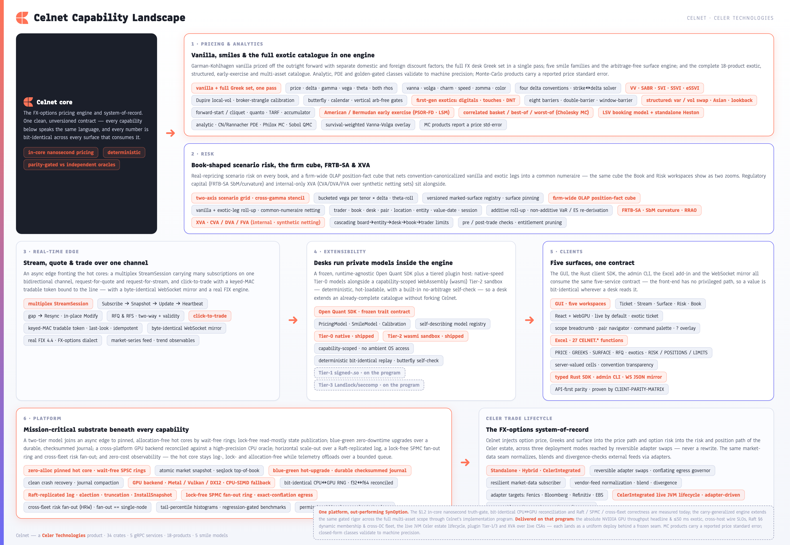
Headline capabilities
- Real-time, microsecond-class pricing with the full FX desk Greek set in one pass. Garman-Kohlhagen vanillas off the outright forward with separate domestic and foreign discounting (
celnet-vanilla); price plus 13 Greeks — spot- and forward-delta, gamma, vega, theta, rho-domestic and rho-foreign, vanna, volga, charm, speed, zomma, color — computed together and finite-difference cross-validated, with all four delta conventions and a branch-aware strike↔delta solver. - The full options catalogue on one wire. A unified
Instrumentcarrying 18 product arms (celnet.proto:1016-1062): vanilla → the complete first-generation exotics (digitals, one-touch/no-touch, double-no-touch/double-touch, all eight single and double barriers, window barriers) → structured and path-dependent products (variance and volatility swaps, arithmetic Asians, forward-start and cliquet, quanto, target-redemption forwards, accumulators, lookbacks) → American/Bermudan early exercise → correlated multi-asset basket/best-of/worst-of → a particle-calibrated LSV booking model plus a standalone Heston engine. Engines span analytic closed form, Crank-Nicolson/Rannacher and ADI PDE, projected-SOR free-boundary FD, Longstaff-Schwartz LSM, and Philox/scrambled-Sobol Monte-Carlo (crates/celnet-exotics/src/). Monte-Carlo-priced products carry an explicitprice_std_erroron the wire. - A complete marking and surface workflow with five smile families. Vanna-Volga, SABR, SVI, SSVI, and eSSVI (extended SSVI, maturity-dependent correlation) smile models (
celnet.proto:372-382) with broker-strangle calibration, a wire-level smile-model selector, butterfly/calendar/vertical arbitrage gates, a Dupire local-vol surface, and an arbitrage-free term structure interpolated in total variance. Scrambled Joe-Kuo Sobol quasi-Monte-Carlo with Brownian-bridge construction delivers measured variance reduction (≈38×/≈88× on geometric-Asian/European targets) for the path-dependent set. - An Open Quant SDK for private models. Desks run their own proprietary pricing and calibration models inside the engine to extend an already-deep built-in catalogue, sandboxed, deterministic, and hot-loadable, without forking Celnet — a user-extensibility surface the closed single-dealer venues structurally cannot offer. The host runs the native (Tier-0) and WebAssembly (Tier-2 wasmi) tiers, with the signed-shared-object and OS-sandbox tiers delivered through Celnet's implementation program behind the same frozen contract.
- One API-first contract behind every surface. The GUI, the Rust client SDK, the admin CLI, and the Excel
CELNET.*add-in all consume the same unversioned contract across five gRPC services with a byte-identical WebSocket JSON mirror. The front-end has no privileged path — it uses the same APIs as any client — so a value is bit-identical everywhere it appears, proven executably byCLIENT-PARITY-MATRIX.md. - Firm-wide risk, regulatory capital, and valuation adjustments. Book-shaped scenario risk (shock grids, bucketed vega per tenor×delta, cross-gamma, theta-roll, versioned marked surfaces), a server-side hierarchical OLAP position-fact cube with common-numeraire netting and additive roll-up that now aggregates exotic legs, per-node VaR/ES re-derivation, a cascading limit tree, and entitlement-aware aggregation — so clients never loop-and-sum. FRTB-SA standardised capital (SbM with the three correlation scenarios, curvature, RRAO) is built and parity-gated against hand-pinned BCBS constants. CVA/DVA/FVA (
crates/celnet-xva/) is computed over expected exposure as an internal quant-risk lens. - Native Celer-lifecycle integration. Celnet injects FX-option price, Greeks, and surface into the Celer price path and option risk into the risk and position path, across standalone, hybrid, and fully-integrated deployment modes, with a real FIX 4.4 engine, a conflating egress governor, and a vendor-feed normalization layer that adapts to external products and feeds — Fenics, Bloomberg, Refinitiv, EBS — as adapter integration targets.
1.1 The Capability Map
The scannable master inventory — the platform's surface area in eight capability clusters, each expanded in full later in this document.
The platform's surface area divides cleanly into eight capability clusters. The map below is the scannable master inventory; each cluster is expanded in full later in this document. The recurring promise across all of them is the same: every value is bit-identical across the GUI, the Excel add-in, the Rust SDK, the admin CLI, and the WebSocket mirror, because they all consume the one contract.
| Cluster | What it delivers |
|---|---|
| Pricing & analytics | The full FX-options catalogue on one wire — 18 product arms on the unified Instrument (celnet.proto:1016-1062): vanilla, the complete first-generation exotics, structured & path-dependent products, American/Bermudan early exercise, correlated multi-asset baskets, and a particle-calibrated LSV booking model plus standalone Heston. Five smile families (Vanna-Volga, SABR, SVI, SSVI, eSSVI) with broker-strangle calibration, arbitrage gates, Dupire local vol, and an arb-free term structure. Scrambled-Sobol QMC with Brownian-bridge variance reduction. Each product parity-gated against an independent oracle. |
| Engine, performance & GPU | A two-tier architecture: an async edge (gRPC / WebSocket / FIX) joined to pinned, zero-allocation hot cores by wait-free single-producer/single-consumer rings. Lock-free atomically-swapped market state and single-writer seqlock top-of-book; blue-green zero-downtime hot upgrades; a checksummed append-only journal with crash recovery and compaction; HdrHistogram p50/p99/p99.9 observability over a bounded drop-on-full telemetry ring that never taxes the hot path. A GPU pricing-backend abstraction (Metal / Vulkan / DX12) with a high-precision CPU oracle and shipped path, pathwise-Greeks, batch closed-form, and scenario kernels. |
| Risk | Book-shaped scenario risk (shock grids, bucketed vega, cross-gamma, theta-roll, versioned marked surfaces) and a firm-wide OLAP position-fact cube over eight dimensions (Trader / Book / Desk / CurrencyPair / Location / Entity / ValueDate / Session) with common-numeraire netting, additive roll-up that includes exotic legs, and non-additive per-node VaR/ES re-derivation. FRTB-SA standardised capital (SbM, three correlation scenarios, curvature, RRAO) and an internal CVA/DVA/FVA lens. Cascading limit tree and entitlement-aware pre-aggregation. |
| Extensibility & plugins | An Open Quant SDK — frozen PricingModel / SmileModel / Calibration traits, a self-describing model registry, and a WIT interface mirror — so desks run private-IP models inside the engine to extend an already-deep catalogue. The host ships the native (Tier-0) and compute-budgeted, capability-scoped wasmi (Tier-2) tiers with bit-identical replay; the signed-`.so` (Tier-1) and OS-sandbox (Tier-3) tiers are designed behind the same frozen contract. |
| Edge, API & wire | One unversioned contract across five gRPC services — PricingService, QuoteService, the multiplex StreamService.StreamSession, RiskService, and SurfaceService — plus a byte-identical WebSocket JSON mirror of the entire contract. A multiplexed streaming session (Subscribe → Snapshot → Update → Heartbeat → Resync, in-place Modify), keyed-MAC click-to-trade with last-look, a real FIX 4.4 engine, vendor-feed normalisation with a conflating egress governor, and intra-fleet HRW partition sharding. |
| Clients | A live-WebSocket-by-default React/WebGPU GUI (Ticket / Stream / Surface / Risk / Book, Cmd-1..5; pair navigator; Cmd-K palette; ? shortcuts overlay); an Excel add-in with 27 CELNET.* functions (no pricing in the cell — every number is the server's value); a typed Rust SDK with reconnect-liveness and an InstrumentSpec builder for all 18 products; and an admin CLI — all reaching the same contract. |
| Distributed correctness & scale-out | A Raft-replicated event log (election + Pre-Vote, conflicting-tail truncation, snapshot compaction, InstallSnapshot reseed) with f64::to_bits-identical replay and hot-standby takeover (celnet-replog); a lock-free SPMC broadcast ring wired under the edge with exact conflation accounting (celnet-fanout); and a cross-fleet HRW risk fan-out reconciled fan-out==single-node to 1e-12 (celnet-risk-fleet). |
| Celer integration | The FX-options pricing system-of-record inside the Celer trade lifecycle — injecting option price/Greeks/surface into the price path and option risk into the risk and position path — across Standalone, Hybrid, and CelerIntegrated deployment modes reached by reversible adapter swaps on the seam traits, never by a rewrite. The same market-data seam ingests external feeds (Fenics, Bloomberg, Refinitiv, EBS) as adapter targets. |
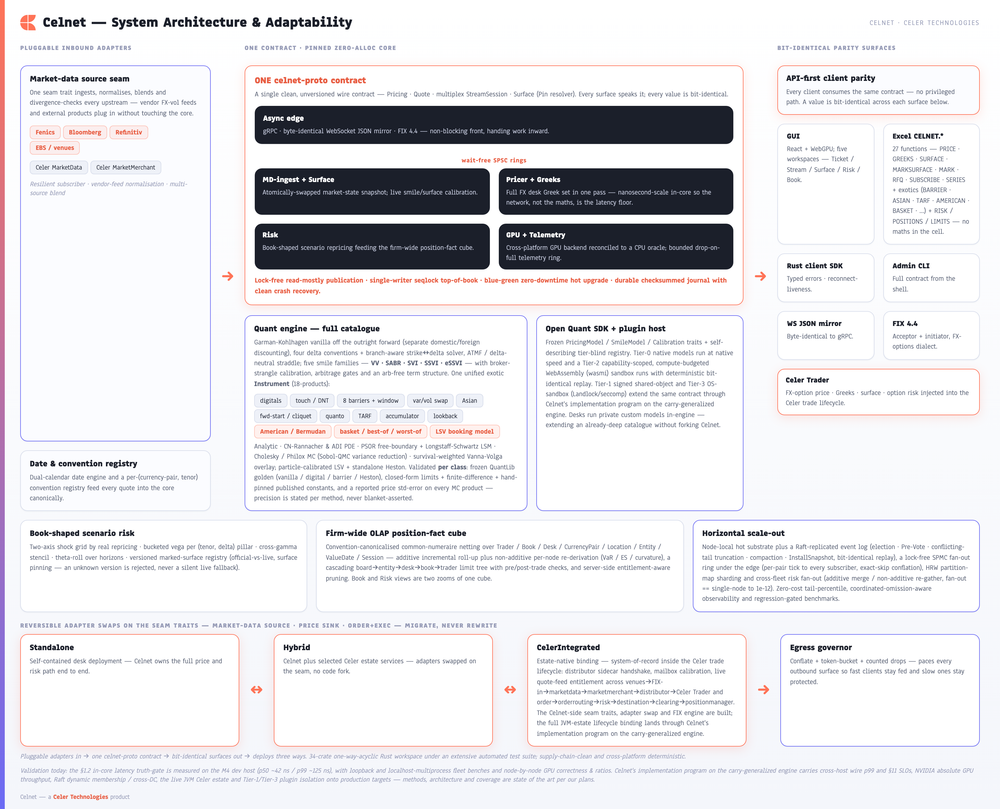
1.2 Competitive Positioning
Why the "meets or beats" claim is executable, not asserted — the parity matrix, the per-class validation bar, and how Celnet beats each vendor-neutral archetype on the dimension it structurally lacks.
Celnet's positioning is easy to state and hard to argue with, because its claims are executable. The cornerstone is a parity matrix rendered as gated integration tests: roughly two-dozen celnet-parity rows plus CLIENT-PARITY-MATRIX.md express each capability — a delta convention, a smile model, a barrier method, a Greek, a risk roll-up, a streaming guarantee, an exotic product — as code that must pass against an independent oracle on every build. Because the matrix runs in the same gates that govern every change, "meets or beats" is something the platform demonstrates continuously rather than something a sales deck asserts.
The validation bar is calibrated per product class. Analytic, PDE, and golden-table products — vanilla, both digital styles, all eight barriers, touch, and Heston — are gated to machine precision against frozen QuantLib reference tables. Structured, path-dependent, and Monte-Carlo products carry an explicit price_std_error and are validated against closed-form limits, finite-difference oracles, and hand-pinned published constants. A desk evaluating Celnet runs the matrix; the matrix is the evidence.
Comparisons use vendor-neutral archetypes, mapped onto the names a desk actually weighs — SynOption, Fenics/kACE, 360T, Bloomberg OVML/BVOL/MARS, and the heavy front-to-back platforms (Murex MX.3, Numerix CrossAsset). Each archetype is strong in one band; Celnet covers the whole span in one contract and beats each on the dimension the others structurally lack.
| Archetype | Where it is strong | Where Celnet wins |
|---|---|---|
| Closed terminal (Bloomberg OVML/BVOL/MARS) | Ubiquitous desktop reach and structure-building; trusted desktop surfaces. | Celnet ships an embeddable, deterministic core a desk can extend — exotic depth is an in-engine catalogue, not a desktop bolt-on — plus the Open Quant SDK to run a desk's own models inside the engine. |
| Data venue (SynOption, 360T) | Distribution, RFS/RFQ workflow, and a multi-MM auto-quoting network. | Celnet matches the exotic/structured set on the one wire while also owning the smile, the exotics, the firm-wide risk cube, and a user-extensible quant SDK that a closed-models venue cannot offer. |
| Analytics vendor (Fenics FMD/kACE) | Deep first-generation digital/barrier/window-barrier coverage, quanto, LSV. | Celnet delivers comparable breadth as one integrated, parity-gated contract rather than a separately-licensed, loosely-coupled analytics module — and ingests Fenics market data as a validated input. |
| Front-to-back platform (Murex MX.3, Numerix CrossAsset) | Deepest production catalogue and full lifecycle coverage, multi-language SDKs, CPU/GPU grids. | Celnet is the FX-options pricing system-of-record with the same structured / path-dependent / American / multi-asset breadth, but adds a clean unversioned contract that collapses change-request latency from quarters to hours and a Rust nanosecond hot core; FX-options analytics is the core, not a bolt-on. |
Celnet now matches Murex MX.3, Numerix CrossAsset, and Fenics kACE on structured and path-dependent breadth — full first-generation exotics, var/vol swaps, Asians, forward-start/cliquet, quanto, TARF, accumulator, lookback, American/Bermudan early exercise, correlated basket/best-of/worst-of, and an LSV booking model — while retaining the edges the deep-catalogue incumbents structurally lack: an open quant SDK, one clean unversioned contract with bit-identical values across five clients, a pinned zero-allocation nanosecond hot core, server-side hierarchical risk, FRTB-SA capital, an internal XVA lens, and an evidence trail of parity matrix plus golden tables plus mutation and fuzz estate.
The result is a single, coherent product that meets the closed terminal on reach, the front-to-back platform on lifecycle fit and catalogue depth, the data venue on distribution, and the modern library on numerical rigour — and beats each on the dimension the others lack, on a supply-chain-clean, cross-platform-deterministic foundation. Decisively, it does this across the whole asset spectrum on one engine (§4), built on state-of-the-art methods and architecture (§5) where the incumbents cover a single band. The chapters that follow expand each capability cluster in turn.
2. System Architecture, Concurrency & Scale-Out
How one engine adapts to the desk, stays nanosecond-fast on a pinned hot core, and scales out correctly — the foundation the multi-asset seam and the quant catalogue are built on.
Celnet starts from a single design conviction: adapt to the desk, never the other way around. The same engine runs self-contained on a quant's laptop, beside a regional risk hub, or wired straight into the Celer trade lifecycle as the firm's FX-options pricing system-of-record — and it moves between those shapes through deliberate, reversible adapter swaps on a small set of seam traits, not a rewrite. Every market-data source, price sink, and order/execution path is a pluggable adapter, so a venue feed, a distributor, or a counterparty channel changes without touching the pricing core. That adaptability is not bolted on; it is the consequence of a strict two-tier split, one-way acyclic crate dependencies, and a distributed-correctness substrate that all share the same wait-free discipline.
Two tiers: a hot core, an async edge
Celnet is built as two cleanly separated tiers joined by a wait-free seam. The async edge is where the outside world meets Celnet: gRPC across five services, a byte-identical WebSocket JSON mirror of the same contract, and a real FIX 4.4 engine all terminate here, alongside vendor-feed normalization, the conflating egress governor, and the per-pair price-tick fan-out hub. The edge is asynchronous, elastic, and free to do everything a networked service must — accept connections, fan out streams, coalesce updates, speak many protocols at once.
The hot core is the opposite discipline. Pricing runs on pinned, zero-allocation cores that never log, never lock, and never allocate on the hot path. All the work that would jitter a tail latency — memory management, telemetry, I/O — is kept off the core entirely. The result is in-core pricing fast enough that network framing, not the mathematics, is the only meaningful latency floor: the wire is the floor, and the maths sits comfortably beneath it. The two tiers are bridged by wait-free single-producer/single-consumer rings — requests cross from edge to core and results cross back, without locks and without blocking either side, so the edge stays responsive under load while the core runs uninterrupted.
| Tier | Responsibility | Discipline |
|---|---|---|
| Async edge | Protocol termination (gRPC × 5 services / WebSocket mirror / FIX 4.4), streaming, conflation, per-pair fan-out, feed normalization, telemetry offload | Asynchronous, elastic, protocol-rich |
| SPSC rings | Edge↔core handoff of requests and results | Wait-free, lock-free, non-blocking |
| Hot core | Vanilla, Greek, surface, exotic, and early-exercise pricing | Pinned, zero-allocation, log/lock/alloc-free |
Lock-free state publication
The core prices against shared market state without ever stalling on a lock. State is published, not contended: the live market-state snapshot is swapped atomically so readers always observe a complete, consistent view; top-of-book is maintained through a single-writer seqlock that lets readers stream prices without blocking the writer; and hot counters are cache-padded to keep cores from contending on shared cache lines. Reads dominate, writes are rare and clean, and no pricing thread waits on another. Telemetry — tail-percentile latency histograms with coordinated-omission correction — offloads over a bounded, drop-on-full ring, so observability never re-enters the hot path it is measuring.
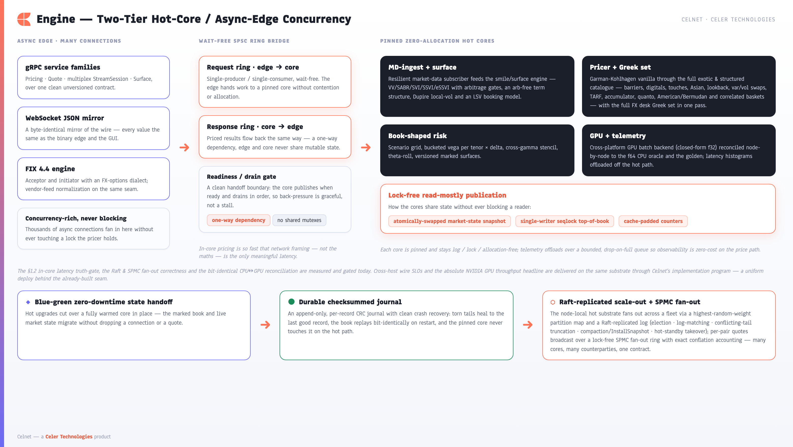
A disciplined 34-crate workspace
Celnet is a 34-crate Rust workspace with strictly one-way, acyclic dependencies. Foundational vocabulary and the single wire contract sit at the base (celnet-types, celnet-core, celnet-proto, celnet-plugin-api); conventions and the calendar, vanilla pricing, the surface engine, the full exotics catalogue (including early exercise and correlated multi-asset baskets), the standalone Heston engine, the Sobol′/QMC layer, the GPU backend, the hot engine, the plugin host, the risk stack (normalize → cube → limits → entitlements → fleet), XVA, integration, the distributed substrate, and the edge build upward on top of them — never sideways into each other.
The crate boundaries are the architecture: a change rebuilds and re-tests only its own subtree, dependencies always point in one direction, and the design stays legible as it grows. The split is deliberately fine-grained so a modification touches a minimal subtree — incremental gates verify only the changed crate(s), and the full-workspace gate runs as the cross-crate integration check before a milestone. An extensive automated test suite, roughly 26 independent-oracle parity rows, and regression-gated benchmarks ride along every boundary, so structure and behaviour are verified together rather than asserted.
Zero-downtime upgrades and durable recovery
Because the platform is mission-critical, it is designed to be upgraded and to survive a crash without losing a tick.
Blue-green hot upgrade. A new engine generation is brought up alongside the running one and the live state is handed off between them, so a version change happens without a pricing outage and without a mixed-version window — one clean contract, deployed uniformly. Capacity can be grown, drained, and hot-upgraded under live flow.
Durable journal with compaction. Every state-changing event is written to a checksummed (CRC-32), append-only journal (celnet-journal). On restart, Celnet replays the journal to reconstruct book and market state exactly, with clean crash recovery: a torn final write left by an abrupt kill heals to the last good record, while genuine interior corruption is surfaced rather than silently masked. The journal also compacts: at a watermark it writes a snapshot record carrying the checkpoint and rewrites only the residual tail crash-safely (write-fresh → fsync → rename), so recovery time stays bounded even under a long-running feed. The load-bearing gate is that replay from the compacted log rebuilds the bit-identical state that replay from the full, never-compacted log produces (replay_from_compacted_equals_replay_from_full_bit_identical). Recovery is therefore both deterministic replay and a standalone, self-pruning write-ahead log — and it stays strictly off the hot path, so durability never taxes pricing latency.
A distributed-correctness substrate
The same two-tier model is the unit of horizontal scale, and three purpose-built crates make scale-out correct, not merely possible.
Leader-replicated event log with full Raft. celnet-replog is a Raft consensus layer over the durable journal: randomized-timeout leader election with a Pre-Vote straw poll (Ongaro thesis §9.6) that stops a flaky or partitioned node from disrupting a stable leader, conflicting-tail truncation so a recovered follower converges to the leader's log, the §5.4.2 commitment rule, durable current_term/voted_for, step-down on a higher term, local snapshot compaction, and the InstallSnapshot RPC (Raft §7) that reseeds a far-behind or freshly-restarted follower from a snapshot plus its residual tail. The committed log replays to a f64::to_bits-identical applied state across nodes — bit-identity, not approximate agreement, is the consensus oracle. The multi-node proof runs logical nodes over real 127.0.0.1 loopback TCP sockets on ephemeral ports (genuine OS sockets, AppendEntries / RequestVote and replies, length-prefixed framing, with the hard rule that the core mutex is never held across a blocking socket call), so quorum, framing, election safety, truncation, and snapshot catch-up are all exercised end-to-end and every test is deadline-bounded.
Lock-free SPMC broadcast fan-out under the edge. celnet-fanout is a single-producer/multi-consumer broadcast ring, and celnet-server/services/pricefanout.rs wires it directly beneath the streaming edge: for each live currency pair a single producer advances the deterministic per-pair spot path once per cadence tick and publishes one small PriceTick POD; every subscribed session holds an independent consumer cursor and observes every tick in order. The per-pair compute happens once and is broadcast to all subscribers — turning an O(subscribers) tick-generator cost into O(pairs). Publication is zero-allocation and lock-free via a true two-phase per-slot seqlock (an in-progress marker straddling the payload store, so no consumer ever reads a torn slot); a consumer lagging beyond the ring depth has the oldest ticks conflated away with exact skip accounting (received + skipped == produced), so overflow is bounded and audited rather than silently lossy, and a slow counterparty can never stall the pricing core.
Cross-fleet risk fan-out. An intra-fleet partition map shards the instrument universe across nodes by highest-random-weight (HRW) assignment, so adding capacity rebalances minimally and predictably. celnet-risk-fleet then reconciles distributed risk against the single-node aggregate: additive measures merge associatively (exact), non-additive measures (VaR/ES, curvature) are re-gathered at firm level and re-derived once, and the fan-out is proven equal to the single-node aggregate to 1e-12. From a single laptop to a Raft-replicated, fan-out-fronted, risk-sharded fleet, the architecture is the same — only how many of it you run changes.
The distributed substrate and its delivery program. The distributed substrate proves correctness, quorum, election safety, framing, and bit-identical replay end-to-end on multi-process real loopback sockets — an established upper bound on compute and lower bound on cross-host wire. Celnet's implementation program lights up the production absolutes on the same built HRW + fan-out seam: cross-host wire p99, the SOTA kernel-bypass NIC datapath, cross-DC transport, network-partition hardening, Raft §6 dynamic membership (joint consensus), physical cross-node risk transport, and the §11 absolute wire-latency SLOs — each a delivery increment on a finished seam, not a rewrite.
The node-local hot substrate
Celnet scales along two independent axes at once: down into a single node, where a pinned hot core prices an investment-bank-sized book without ever leaving cache or touching the allocator; and out across a fleet, where a rendezvous-hashed partition fabric shards the universe, a Raft-replicated event log keeps state bit-identical across nodes, and a lock-free broadcast ring fans each pair's live tick to every subscriber. The same binary serves a one-desk standalone deployment and a firm-wide grid — you add nodes, not architecture.
Every Celnet node carries a complete pricing substrate. Because in-core pricing runs at nanosecond scale (measured on the M4 dev host at roughly 42 ns p50 / 125 ns p99 for price + 13 Greeks, inside the §1.2 absolute truth-gate), a single node already absorbs an investment-bank-sized portfolio, re-pricing whole books without the maths becoming the bottleneck. The practical consequence: scaling the system is about moving messages efficiently rather than buying compute headroom for the maths.
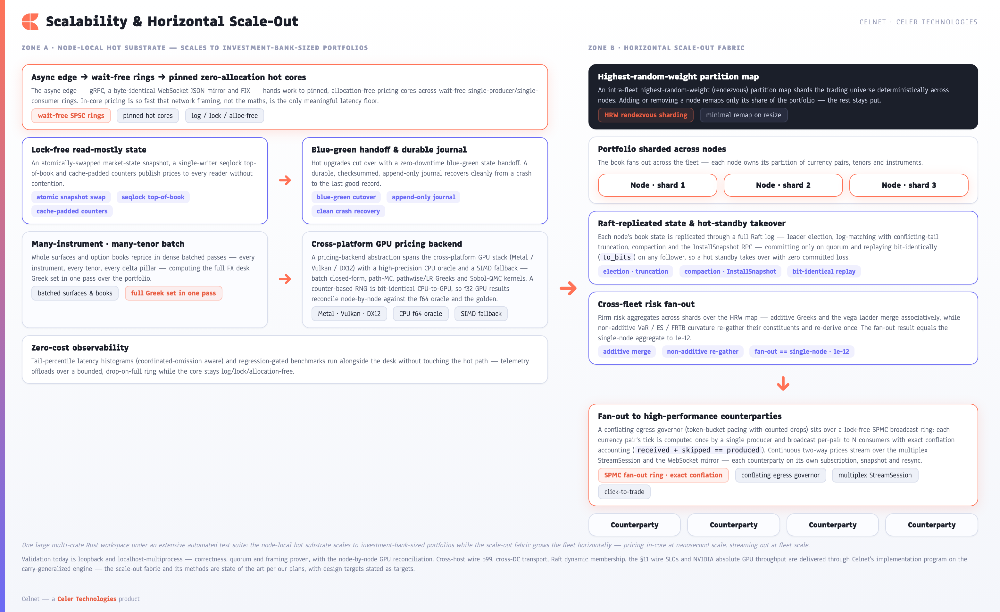
Cross-platform GPU acceleration
For the embarrassingly-parallel workloads — large strike/tenor batches, Monte-Carlo path-dependent exotics, scenario grids, pathwise Greeks — Celnet drives a pricing-backend abstraction over the cross-platform GPU stack (Metal, Vulkan, DX12, via wgpu), backed by a high-precision CPU oracle and a CPU-SIMD fallback. A counter-based RNG is bit-identical between CPU and GPU, and every GPU result is reconciled against the f64 CPU oracle node-by-node within a derived (never fitted) bound, so acceleration never costs determinism. Four kernels are shipped in celnet-gpu:
- Batch closed-form revaluation (
batch.wgsl/batch.rs) — one dispatch prices an O(10⁴–10⁶)-point (pair, tenor, strike) grid of Garman-Kohlhagen vanillas analytically, one thread per instrument; no RNG, no Monte-Carlo noise, only f32 round-off vs the f64 oracle (measured max rel-err ~3.1e-7, inside the per-node bound). This is GPU-at-scale Workload A. - Multi-step QMC path kernel (
path.wgsl/path.rs) — evolves a large batch of multi-step Brownian-bridge paths under shared Sobol′ draws and prices a path-dependent arithmetic-average Asian; the Sobol′ integers are bit-identicalu32gray-code XOR on both sides. - Pathwise / likelihood-ratio Greeks (
greeks.wgsl/pathwise.rs) — one dispatch produces per-path delta/vega estimators (pathwise for the smooth call, likelihood-ratio for the discontinuous digital), reconciled three-way GPU-f32 ≈ CPU-f64 ≈ analytic within MC error. - Scenario grid (
scenario.wgsl/scenario.rs) — a whole spot×vol shock grid under common random numbers in one dispatch.
The measured M4 dispatch-amortization curve runs 0.68×@4k → 53×@1M paths as the device saturates. GPU correctness is proven today (GPU-f32 == CPU-f64 within the derived bound, both == the closed-form / golden chain within QMC error) with host-local ratios reproducible on any silicon; the CUDA/NVIDIA absolute GPU throughput headline, the ≤50 ms exotic target, and the Workload-A/B absolute figures are delivered through the CUDA backend on NVIDIA hardware — the f64-correct kernels and reconcile harness are already in place, so the program lights up the absolute numbers on the target accelerator.
Horizontal scale-out fabric
When one node is not the whole firm, Celnet fans out. An intra-fleet highest-random-weight (rendezvous) partition map (celnet-router) assigns each currency pair / instrument deterministically to a node, so the trading universe shards cleanly with minimal reshuffling when nodes join or leave — every node agrees on ownership without a coordinator on the hot path. The currency pair is the primary partition key, so every tenor and strike of a pair is co-resident on one shard and surface-shaped roll-up never crosses a shard. Pricing and risk for a partition live where that partition lives; clients are routed to the owning node, and capacity grows by adding nodes rather than widening a central server.
Fan-out to counterparties is governed for both fast and slow consumers. The SPMC broadcast ring shares per-pair compute (the LMAX-Disruptor multi-consumer shape: each consumer owns its cursor and re-reads the same slots), and on top of it a conflating egress governor collapses superseded updates per subscriber, paces with a token bucket, and counts what it drops; the multiplex StreamSession carries many subscriptions over one bidirectional channel with per-subscription sequencing and gap-driven resync.
| Scaling layer | What it provides | How a desk uses it |
|---|---|---|
| Node-local hot substrate | Pinned, zero-allocation, lock-free in-core pricing of an IB-sized book at nanosecond scale (price + 13 Greeks) | One node prices a whole book and streams it; add nodes for capacity, not to relieve the maths |
| GPU backend | Cross-platform (Metal/Vulkan/DX12) batch closed-form, QMC path, pathwise/LR Greeks, scenario kernels; CPU oracle + SIMD fallback; deterministic CPU↔GPU | Offload large batch / Monte-Carlo / scenario work; reproducible on any silicon |
| Raft-replicated event log | Leader election (Pre-Vote), log-matching, conflicting-tail truncation, snapshot compaction + InstallSnapshot; bit-identical (to_bits) replay | Replicate priced-book state across nodes with proven cross-node bit-identity and hot-standby takeover |
| SPMC broadcast ring | One producer per pair → N consumers; zero-alloc lock-free publish; bounded conflation with exact skip-accounting | Fan one pair's tick to 100s–1000s of subscriber sessions without per-subscriber recompute |
| Cross-fleet risk fan-out | HRW partitioning + additive merge / non-additive re-gather; fan-out == single-node | Compute firm risk by fanning out across shards and reconciling to the single-node aggregate |
| Conflating egress governor | Per-client conflation, token-bucket pacing, counted drops | Stream to slow and fast counterparties from one source without head-of-line stalls |
Distributed correctness: Raft-replicated log + cross-fleet risk
Sharding alone is not a firm-grade distributed system; the state has to stay correct across nodes through failures. The load-bearing safety invariant of celnet-replog — proven by the parity rows raft_election / raft_snapshot / raft_compaction — is that any two nodes that have committed index i hold byte-identical log[0..=i] and to_bits-identical applied BookState; at most one leader exists per term, and a stale leader's divergent tail is reconciled by truncation. Hot-standby takeover loses zero committed entries.
Firm-level risk fans out and back in over the same partition fabric (celnet-risk-fleet). Each logical shard rolls up its own facts in its own cube; the firm reducer then combines additive measures (per-ccy net Greeks, the tenor×delta vega ladder) by associative/commutative merge — exactly the single-node sum, bit-equal under the pinned deterministic shard order — and re-derives non-additive measures (VaR / ES, FRTB-SbM curvature, correlation-weighted vega) by gathering the union of every shard's constituent positions and re-deriving once over the whole set. Summing shard VaRs would be wrong — VaR is a non-linear functional of the joint P&L distribution, so offsetting positions on different shards diversify (sub-additivity) and adding standalone tails double-counts. Because the firm reducer sees the identical constituent multiset the single-node cube would, the result is exact by construction: the parity rows reconcile fan-out == single-node firm_aggregate to 1e-12 across the full net-Greek set and the vega ladder, and the non-additive VaR/ES/curvature to 1e-12 relative.
One scaling model, no rewrite
The crucial property is that these layers compose without changing the contract. The identical unversioned API, the identical hot-core pricing, and bit-identical values hold whether Celnet runs as a single self-contained node on a trader's desk or as a sharded, GPU-accelerated, Raft-replicated, fanned-out fleet inside the firm's estate. A deployment moves along the scale-out curve by swapping adapters and adding nodes — never by re-implementing the platform — and zero-cost observability (coordinated-omission-aware tail-percentile latency histograms on a bounded drop-on-full telemetry ring) plus regression-gated benchmarks keep that scaling measured and verified as the fleet grows.
3. Quantitative Coverage, the Volatility Surface & Integrated Risk
The analytics surface end to end — vanilla and the full Greek set, the five-family surface engine, the full exotic catalogue, the validation regime, and how one source of truth rolls up into firm-wide risk and capital & XVA. The same methods generalize across asset classes in §4.
Celnet is not a thin challenger closing gaps — it is a functionally complete, evidence-backed superset of the quant catalogue a derivatives desk stitches together today, proven by a runnable parity matrix against independent oracles and reachable identically from five clients. Every price, every Greek, every smile and every exotic is computed by the same in-core engine that powers the live pricing edge, so the number a trader sees in the ticket, the number that streams over the wire, and the number a quant pulls into a spreadsheet are one and the same. This section maps the analytics surface end to end — from a single vanilla through the full Greek set, the five-model smile engine, the full exotic and structured catalogue, and the LSV booking engine — and then shows how that single source of truth is rolled up into firm-wide risk, regulatory capital and counterparty valuation adjustments. Each method is the state-of-the-art technique for its regime; the methods catalogue and its provenance are in §5.

Vanilla pricing and the full FX desk Greek set in one pass
Vanilla European options are priced with the Garman–Kohlhagen model, struck off the outright forward and discounted with separate domestic and foreign discount factors — the correct FX construction, not an equity model bent into shape. From that single valuation Celnet returns price plus the full FX desk Greek set in one pass: spot-delta and forward-delta, gamma, vega, theta, both rhos (domestic rho_dom and foreign rho_for), and the full second- and third-order book — vanna, volga, charm, speed, zomma and color. A desk gets every sensitivity it risks against from a single call, with no second pricing round-trip to chase a cross-Greek.
Every one of these sensitivities is cross-validated by finite differences against the analytic closed form (celnet-parity/tests/greeks.rs), so the analytic Greeks a desk trades on are continuously checked against an independent numerical bump of the same model — correctness is a property of the build, not a hope. The hot core that produces price plus 13 Greeks is the pinned zero-alloc loop benchmarked at nanosecond scale.
| Greek family | Sensitivities delivered in the single pass |
|---|---|
| Value | Price (off the outright forward, dual discount factors) |
| First order | Spot-delta, forward-delta, vega, theta, rho_dom, rho_for |
| Second order | Gamma, vanna, volga, charm |
| Third order | Speed, zomma, color |
Delta conventions and the branch-aware strike↔delta solver
FX desks quote in delta, not strike, and the mapping between them depends on convention. Celnet implements all four delta conventions — spot and forward, each in unadjusted and premium-adjusted form — and a branch-aware strike↔delta solver that inverts the relationship robustly. Crucially, the solver is aware of the premium-adjusted call-delta maximum: where the premium-adjusted delta function turns over and a naive root-finder would pick the wrong branch, Celnet selects the correct one. Both at-the-money rules are built in and applied sign-correctly per convention — at-the-money-forward (ATMF) and the delta-neutral straddle (DNS). A trader can pin a wing by 25-delta or 10-delta, anchor the smile at ATMF or DNS, and trust that the strike Celnet returns is the strike the market means.
Adjoint Greeks at portfolio scale
For risk at firm scale the cost of sensitivities matters as much as their correctness. Celnet computes Greeks by genuine reverse-mode adjoint algorithmic differentiation (AAD) over the pricing graph: a single reverse sweep yields the full first-order block plus the second-order gamma/vanna/volga, turning an O(factors) bump-and-revalue into an O(1)-in-factors pass. The closed-form analytic Greeks are retained as the validation oracle, gated equal to ~1e-12, so the fast path is provably the exact path. This is what lets the risk cube re-derive a whole book's sensitivities in one sweep per position rather than one per shocked factor.
3.1 The Volatility Surface Engine — Five Smile Families, Arbitrage-Free by Construction
How Celnet marks vol: five selectable smile models, broker-strangle calibration, no-arbitrage gates, and a Dupire local-vol surface that feeds the exotic engines.
Celnet marks volatility with a full smile-and-surface engine rather than a single fixed parameterisation. Five smile models are available — Vanna-Volga, SABR, raw-SVI, SSVI and eSSVI (the extended, maturity-dependent-ρ surface in celnet-surface/src/extended_surface.rs) — and a smile-model selector lets a desk mark or recalibrate a smile under any of them and compare. SSVI is byte-recovered as the constant-ρ special case of eSSVI, so the extension is additive, not a fork. Market quotes enter the engine the way they are actually traded: a broker-strangle → smile-strangle fixed-point calibration resolves the market (broker) strangle into a consistent smile strangle, so the calibrated smile reproduces the prices a desk was shown.
No-arbitrage is enforced, not assumed. Arbitrage gates check butterfly density non-negativity (no negative implied densities, via pointwise Breeden–Litzenberger re-pricing), vertical-spread monotonicity, and calendar total-variance monotonicity across tenors. The eSSVI surface carries the closed-form static no-arbitrage conditions (per-slice butterfly plus consecutive-slice calendar). The term structure is assembled arbitrage-free, interpolated in total variance, so volatility between pillar tenors is consistent and free of calendar arbitrage by construction. For the exotic and LSV engines, the smile is converted to a Dupire local-volatility surface (celnet-exotics/src/leverage.rs).
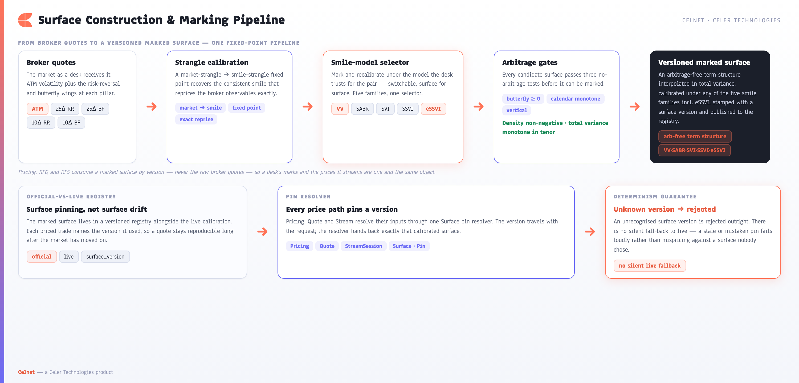
| Stage | What the engine does |
|---|---|
| Quote intake | Broker (market) strangle → smile-strangle fixed-point calibration |
| Smile models | Vanna-Volga, SABR, raw-SVI, SSVI, eSSVI — chosen via the model selector |
| Arbitrage gates | Butterfly density non-negative, vertical monotonic, calendar total-variance monotonic |
| Term structure | Arbitrage-free, interpolated in total variance |
| Local vol | Dupire local-volatility extraction feeding the exotic/PDE/LSV engines |
| Marking | Mark / recalibrate / publish under any model with surface versioning |
The marking workflow is exercised live from the GUI's Surface workspace — a smile chart alongside the ATM / 25RR / 25BF / 10RR / 10BF marking grid, the arbitrage-free gate, the broker-calibrated smile, an explicit surface version with reset and publish controls, and five model chips including eSSVI.

3.2 The Full Exotic & Structured Catalogue
Every exotic and structured product as a real shipped engine, organised by the numerical regime that sets its validation bar — the breadth that meets the deep-catalogue platforms, extensible to bespoke IP via the Open Quant SDK.
On top of vanilla and the smile engine, Celnet ships the full FX exotic and structured catalogue — not a first-generation subset. Every product below is a real, shipped engine in celnet-exotics (and celnet-heston), exposed on the one wire as a oneof arm of the unified Instrument, and gated by an independent parity row in celnet-parity. The catalogue is organised by the numerical regime each product class genuinely lives in — which is exactly what determines its validation bar.
(a) First-generation vanilla-family exotics — method triangulation
Digitals, one-touch and no-touch, double-no-touch and double-touch, single and double barriers (knock-in and knock-out), and window barriers (barrier.rs, digital.rs, touch.rs plus the window-barrier path). What sets this band apart is method triangulation: each product is reachable by multiple independent methods, cross-validated against one another so PDE, Monte-Carlo and analytic agree before a price is trusted.
- Analytic — closed-form barrier valuation via the reflection-principle construction.
- Crank-Nicolson PDE — a finite-difference solver (
pde.rs) with a Rannacher start-up that damps the oscillations barriers and digital payoffs would otherwise induce near the boundary. - Philox Monte-Carlo — a counter-based simulation path (
rng.rs), bit-reproducible across runs and across CPU and GPU. - Survival-weighted Vanna-Volga overlay (
market_hedge_overlay.rs) — a market overlay that re-introduces smile risk into the touch / barrier price, weighted by survival probability.
For this band, PDE ≈ MC ≈ analytic is a continuously enforced invariant, and every product is validated against the frozen QuantLib golden tables (celnet-golden/data/{digital_gk,touch_gk,barrier_gk,double_barrier_gk}.csv).
| Product | Analytic | Crank-Nicolson / Rannacher PDE | Philox Monte-Carlo | Survival-weighted VV overlay |
|---|---|---|---|---|
| Digitals | ✓ | ✓ | ✓ | ✓ |
| One-touch / No-touch | ✓ | ✓ | ✓ | ✓ |
| Double-no-touch / Double-touch | ✓ | ✓ | ✓ | ✓ |
| Single barriers (KI / KO) | ✓ | ✓ | ✓ | ✓ |
| Double barriers (KI / KO) | ✓ | ✓ | ✓ | ✓ |
| Window barriers | — | ✓ | ✓ | ✓ |
(b) Closed-form structured products
Priced by genuine closed-form or model-free static replication, then gated at closed-form precision against an independent recomputation:
- Variance swap (
var_swap.rs) — fair variance strike by log-contract1/K²static replication (Demeterfi–Kamal–Zou / Carr–Madan) over the smile-consistent OTM forward-option strip, with an adaptive wing extended to a relative-convergence floor. - Volatility swap (
vol_swap.rs) — the Carr–Lee convexity (Jensen) adjustmentK_vol = √K_var − Var(v)/(8·K_var^{3/2}), strictly below√K_varfor any non-degenerate smile. - Arithmetic Asian (
asian.rs) — the arithmetic average is not lognormal, so there is no exact form; Celnet ships the two market-standard fast analytic estimators, each labelled at its true accuracy: Turnbull–Wakeman two-moment lognormal matching and Curran geometric-conditioning, handling the FX carry and the seasoned (in-progress-average) case. - Forward-start vanilla & cliquet (
forward_start.rs) — the exact Rubinstein (1990) FX dual-carry strike-reset closed form; a plain (uncapped) cliquet is the exact sum of its forward-start legs, while a locally-capped/floored cliquet falls to Monte-Carlo. - Quanto (
quanto.rs) — exact closed form via the quanto drift adjustment−ρ·σ_S·σ_Z, with the Monte-Carlo engine as a cross-check. - Lookback (
lookback.rs) — fixed- and floating-strike closed forms (Goldman–Sosin–Gatto / Conze–Viswanathan) for continuous monitoring, with a Brownian-bridge extremum-correction Monte-Carlo that converges to the continuous-monitoring oracle.
(c) Monte-Carlo path-dependents
Products whose payoff structure has no closed form, priced on the counter-based, antithetic, bit-reproducible Monte-Carlo engine over the scrambled-Sobol / Brownian-bridge quasi-random stack. Each carries a Monte-Carlo price_std_error on the wire as a precise statement of estimator precision:
- TARF (
tarf.rs) — target-redemption forward: a strip of periodic fixings with a cumulative target that knocks the structure out, gearing on the adverse side, and the explicitFullGainvsCappedGaingap-risk premium. - Accumulator / decumulator (
accumulator.rs) — periodic accumulation at a discounted pivot with a knock-out barrier and adverse-side gearing, in discrete and Brownian-bridge-continuous monitoring conventions. - Correlated multi-asset basket / best-of / worst-of (
multiasset.rs) — weighted basket, best-of-N and worst-of-N (rainbow) calls and puts over a portfolio of pairs, priced by a Cholesky-correlated multi-asset GBM Monte-Carlo over the QMC stack; a non-SPD correlation matrix is rejected explicitly rather than silently regularised.
(d) American / Bermudan early exercise
Physically-settled FX options trade American-style, and Celnet prices them two independent ways and cross-validates them (american.rs): a projected-SOR (PSOR) free-boundary Crank–Nicolson finite-difference solver that treats early exercise as a linear-complementarity problem and discovers the exercise boundary without tracking it, and a Longstaff–Schwartz regression Monte-Carlo (LSM) over Sobol/Brownian-bridge paths. The Bermudan case applies the exercise projection only at permitted dates; the LSM estimator carries a Monte-Carlo price_std_error.
(e) LSV booking engine + standalone Heston
The booking-grade second-generation layer:
- Local-Stochastic-Volatility booking model (
lsv.rs, withstochvol.rs,leverage.rs,particle.rs,adi.rs) — a Heston variance backbone with a Dupire leverage surface calibrated by the interacting-particle method (the McKean–Vlasov leverage identity, calibrated forward-in-time, non-parametrically via a Nadaraya–Watson kernel estimate ofE[v|S]). It prices on two independent engines — a 2-D Hundsdorfer–Verwer ADI PDE on the (spot, variance) grid and the antithetic QE-stepper Monte-Carlo — anchored by three asserted guarantees: it reprices the arbitrage-free vanilla surface (PDE), ADI-PDE ≈ MC on a window-barrier payoff, and the pure-local-vol limit (ξ=0, v₀=θ) recovers the Dupire price. Selectable on the wire via thePricingModeldirective (DEFAULTanalytic vsLOCAL_STOCH_VOL). - Standalone Heston (
celnet-heston) — European vanilla via two genuinely independent Fourier transforms of the same branch-cut-free (Cui–del Baño Rollin–Germano) characteristic function: Carr–Madan damped-integral Gauss–Legendre quadrature and the Fang–Oosterlee COS method, agreeing to|cm − cos| ≤ 1e-8 + 1e-7·priceover the ≤3y FX grid, and gated against a frozen QuantLib golden table (celnet-golden/data/heston_fo.csv). No external FFT dependency — single-strike pricing controls accuracy directly.
Sobol quasi-Monte-Carlo variance reduction
The Monte-Carlo path-dependents ride a complete randomized quasi-Monte-Carlo (RQMC) stack (celnet-qmc): a gray-code Joe–Kuo Sobol' generator with an embedded BSD-licensed direction-number table, an Owen-style nested digital scramble for unbiased replications, principal-bisection Brownian-bridge path construction loading the dominant variance onto the best-distributed dimensions, and a full-precision inverse-normal CDF. The variance reduction is measured, not asserted (celnet-parity/tests/qmc.rs, gated ≥ 3×): on exact-value targets the QMC RMSE is roughly 38× smaller for a geometric-average Asian and ~88× smaller for a European than a fair plain pseudo-random estimator at the same path budget.
~26 parity rows · 5 smile models · 18+ product families · QuantLib 1.42.1 golden tables · QMC RMSE up to ~88× tighter
3.3 Validation Regime — the Right Oracle for Each Product Class
The dates, conventions and independent oracles underneath every price — each product class gated against the strongest standard it admits (the full assurance estate is in §8).
Pricing is only as good as the dates, conventions and oracles underneath it. Celnet runs a dual-calendar date engine (celnet-calendar) — resolving spot, expiry, delivery and roll across the two settlement calendars an FX pair actually depends on, including ON/TN/SN, IMM and broken dates — and a per-(currency-pair, tenor) convention registry (celnet-conventions) carrying the right delta convention, ATM rule, day-count and premium treatment per instrument, validated against published EMTA/ISDA tables across a 19-pair universe.
The validation method is stated per product class rather than blanket-claimed — each band is gated against the oracle that genuinely bounds it, and Monte-Carlo products report estimator precision explicitly:
| Product class | Validation oracle | Bar |
|---|---|---|
| Vanilla, digitals, both touch styles, all 8 barriers, window barrier | Frozen QuantLib 1.42.1 golden tables + analytic/PDE cross-validation | ~1e-9/1e-10 (closed-form), ~1e-6 (series-gated double-barrier) |
| Standalone Heston | Frozen QuantLib golden table (heston_fo.csv) + CM-vs-COS internal agreement | 1e-8 + 1e-7·price |
| Variance/vol swap, forward-start/cliquet, lookback (continuous), quanto | Independent closed-form recomputation / closed-form limits | ~1e-6 to ~1e-10 |
| Asian (Turnbull–Wakeman, Curran) | Closed-form degenerate limits + independent MC within reported stderr | TW at its true ~1.5% approximation band; Curran within MC stderr |
| eSSVI surface | Pointwise Breeden–Litzenberger density + calendar-monotone re-pricing; SSVI byte-recovery | density ≥ 0, ≤1e-9 self-reprice |
| TARF, accumulator, basket/best-of/worst-of, American/Bermudan (LSM) | Independent code-disjoint MC / closed-form limits | within reported price std-error band |
| LSV booking model | Vanilla-surface reprice + ADI-PDE ≈ MC + pure-local-vol Dupire limit | tolerance-gated, asserted in-suite |
The whole library is re-checked on every build by ~26 parity rows against genuinely independent oracles (celnet-parity/tests/*) plus the frozen golden tables — never plausibility, always agreement with an independent computation. The discipline is sharpened by a real defense: a circular self-oracle defect in the FRTB low-correlation floor was caught and the constant re-derived against the published BCBS source.
Extensible to bespoke products via the Open Quant SDK
The catalogue above is the shipped core, already matching the structured/path-dependent breadth the deep-catalogue platforms charge for — not the ceiling. The Open Quant SDK exposes the same PricingModel, SmileModel and Calibration seams the core uses, so a desk can extend Celnet to house and bespoke payoffs and run them inside the same engine — sandboxed (Tier-0 native or the Tier-2 wasmi deterministic sandbox), bit-reproducible by replay, and hot-loadable, without forking Celnet. Structures like TARFs, quantos and baskets are already shipped core, so the SDK is for genuinely novel IP rather than filling catalogue gaps.
The Ticket workspace is where this breadth becomes a workflow: a structure selector spanning the full catalogue (vanilla strategies, the first-generation exotics, Asians, forward-start/cliquet, quanto, lookback, TARF, accumulator, window barriers, American/Bermudan, and correlated baskets/best-of/worst-of), the notional and tenor strip, the legs and strikes, a zero-cost Solve, two-way BID / MID / OFFER, the active conventions shown on the face of the ticket, and direct hand-off to Request-quote, Stream or Add-to-risk.

3.4 Integrated Risk — One Fact Cube, Two Altitudes
One position-fact cube seen at two zooms — a position's behaviour under shocks and the firm's whole netted book — the algebra that generalizes to every asset class in §4.4.
Celnet treats risk as a single, integrated capability that spans two altitudes at once: the micro view of an individual position's behaviour under shocks, and the macro view of the firm's entire option book netted, rolled up, and policed against limits. Both are two zooms of one underlying truth — a position-fact cube — so a trader and a board-level risk officer are always looking at the same numbers, never a reconciliation of two systems.
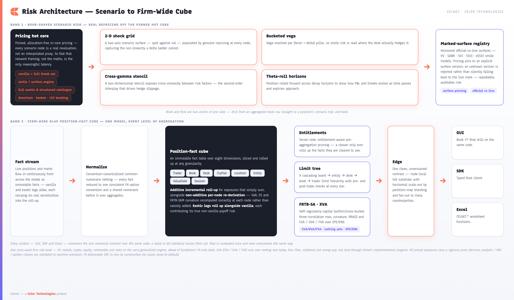
Book-shaped scenario risk
Risk at the desk is computed by real repricing, not by linear extrapolation from a single point. Every scenario number is produced by re-running the same nanosecond-scale pricing core that quotes live, so the risk surface is internally consistent with the price.
| Measure | What it gives the desk |
|---|---|
| Two-axis scenario grid | A shock matrix — typically spot × vol — where every cell is a genuine reprice. Axes are swappable, so the same grid renders P&L, delta, or vega exposure. |
| Bucketed vega ladder | Vega decomposed per (tenor, delta) pillar, so volatility risk is read where the desk actually marks it — short-dated vs long-dated, wings vs ATM. |
| Cross-gamma stencil | A two-dimensional curvature stencil capturing how delta moves as spot and vol move together, not just along a single axis. |
| Theta-roll | Time decay projected over forward horizons, rolling expiries node by node so the desk sees the carry of the book as the clock advances. |
Underpinning all of it is a versioned marked-surface registry. A calibrated smile is deposited under a fresh surface version and becomes the official mark; pricing and risk then pin against a named version. The registry holds the distinction between the official mark and the live market explicitly — official-vs-live is a first-class concept, not an overwrite. Asking for an unknown surface version is rejected outright rather than silently falling back to live data, so a risk run is always reproducible against exactly the surface it claims to use.

The firm-wide position-fact cube
Above the desk view sits an OLAP position-fact cube that gives the firm one canonical, queryable picture of all option risk. Positions arrive in many conventions and numeraires; Celnet canonicalizes them — convention-normalized and netted into a common numeraire — before anything is aggregated, so figures across pairs, books, and entities are genuinely additive where they should be. The cube is an immutable fact table over eight dimensions: Trader, Book, Desk, CurrencyPair, Location, Entity, ValueDate and Session.
Roll-up respects the mathematics of each measure. Additive measures (notional, delta, vega) accumulate incrementally up the hierarchy — fast, and exact. Non-additive measures (VaR, expected shortfall, curvature) are re-derived per node rather than summed, because a portfolio's tail risk is not the sum of its parts. The cube knows the difference and applies the correct treatment automatically at every level.
On top of the cube sits a cascading limit tree — board → entity → desk → book → trader — with both pre-trade and post-trade checks, so a candidate trade is tested against every limit it would touch before it is done, and the live book is policed continuously after. Finally, aggregation is entitlement-aware: the server prunes the cube to what a given viewer is allowed to see before it aggregates — pre-aggregation pruning, not after-the-fact redaction.
One cube, two views — Book ↔ Risk drill
Because the desk's book view and the scenario-risk view are projections of the same fact cube, a trader can move between altitudes in a single gesture. The Book workspace presents net P&L, Vega, Gamma, and Theta as headline cards with a per-pair breakdown and an aggregate vega ladder; selecting any aggregated book row drills straight into that position's scenario risk in the Risk workspace — same numbers, deeper zoom, no context switch and no separate tool.

Exotic legs aggregate as first-class citizens
The cube is not a vanilla-only ledger. A booked exotic — a barrier, a digital — earns a genuine seat in every roll-up, contributing its real sensitivities rather than a vanilla proxy or a silent zero that would understate the firm's risk. An exotic leg supplies its full canonical Greek set and premium line so it sums into the net-Greeks and vega-ladder roll-up exactly like a vanilla leaf, and it re-prices the real exotic payoff under each scenario for VaR/ES and supplies its own up/down curvature legs for FRTB — so the firm tail and curvature reflect a knock-out's gamma sign-flip near the barrier or a digital's pin risk, never a smoothed-over vanilla approximation. Digitals use the closed-form celnet-exotics digital Greeks; barriers use a central finite-difference of the closed-form Reiner-Rubinstein price (deterministic, libm-routed and bit-reproducible). The deterministic, closed-form members — single barrier and European digital — re-price exactly under shocks with no estimator noise, so they slot into the cube's machine-exact VaR/curvature path; MC-priced exotics extend the same ExoticKind seam through a finite-difference of a common-random-number MC price that carries an explicit Monte-Carlo standard-error band.
Crucially, this exotic-leg aggregation is preserved end-to-end through the distributed fan-out: a firm book including exotic legs, partitioned across an HRW (highest-random-weight) fleet and re-aggregated through the cross-shard algebra, reconciles to the single-node firm aggregate — additive Greeks to ~1e-12 and the re-gathered non-additive VaR/ES and curvature to the same bit-level tolerance. The exotic seat survives sharding; the firm view is the same number whether computed on one node or fanned out across the fleet. (celnet-risk-cube/src/exotic.rs; parity rows celnet-parity/tests/exotic_risk_cube.rs; the cross-shard algebra lives in celnet-risk-fleet.)
3.5 Regulatory Capital & Counterparty Valuation Adjustments
FRTB-SA standardised capital and an internal CVA/DVA/FVA lens computed on the same fact cube — the risk-class-agnostic machine that lights up cross-asset capital in §4.4.
FRTB-SA (Standardised Approach)
On top of the position-fact cube, Celnet computes market-risk capital under the Basel FRTB Standardised Approach (BCBS MAR21/22/23) — the full Sensitivities-based Method (SbM), not a stand-in. Capital is built bottom-up from net sensitivities the cube already holds:
| Stage | Method (BCBS reference) |
|---|---|
| Weighted sensitivity | WS_k = RW_k · s_k — each net delta/vega scaled by its prescribed risk weight (MAR21.3). |
Within bucket K_b | K_b = √( max(0, Σ WS_k² + Σ_{k≠l} ρ_{kl} WS_k WS_l) ), with the MAR21.4(3) non-negativity floor under stressed correlation. |
| Across buckets | K = √( Σ K_b² + Σ_{b≠c} γ_{bc} S_b S_c ) with signed bucket sums S_b, and the MAR21.6 alternative S_b = max(min(Σ WS_k, K_b), −K_b) when the cross-bucket radicand goes negative. |
| Three correlation scenarios | The whole charge is recomputed under HIGH (ρ,γ → min(1, 1.25·ρ)), MEDIUM (as prescribed) and LOW (ρ,γ → max(2·ρ−1, 0.75·ρ)) correlations, and the capital is the maximum of the three — the defining SbM property (MAR21.6(1)). |
| Curvature | Per-bucket K_b = max(K_b⁺, K_b⁻) from the up/down reprice net of delta, with the ρ²/γ² curvature correlations and the chosen direction's CVR sign carried into the cross-bucket sum (MAR21.5.2). |
| RRAO | A flat add-on — 1.0% of gross notional on exotic-underlying instruments plus 0.1% on instruments carrying other residual risk (gap/digital, correlation, behavioural). Barriers, digitals, one-touches and TARFs are textbook RRAO (MAR23.4/.5). |
| DRC | For a pure deliverable-FX book the Default Risk Charge is a documented, cited zero (MAR22) — there is no issuer jump-to-default in deliverable FX. |
The quadratic-form kernel √(Σ WS² + ΣΣ ρ WS WS) is factored once and reused for delta, vega and the cross-bucket step, so there is no duplicated formula and no opportunity for the three sites to drift. The 0.75ρ LOW-correlation floor — material for FX where γ = 0.6 must decorrelate to 0.45, not 0.2 — is pinned to hand-computed BCBS constants in a dedicated test, after a prior wave caught a circular-oracle defect (a longhand check that had independently re-derived the same wrong floor). The whole SbM machinery is gated against a genuinely independent longhand oracle — every formula re-written from raw weighted sensitivities using only f64 arithmetic and f64::sqrt, never calling back into the production code — agreeing to ~1e-10, with structural identities (a perfectly-hedged bucket gives K_b = 0; RRAO equals the exact hand-summed Σ |notional|·weight). (celnet-risk-cube/src/frtb.rs; parity row celnet-parity/tests/frtb.rs.)
XVA — CVA / DVA / FVA
Celnet computes the counterparty-risk valuation adjustments — CVA (credit), DVA (debit/own-credit) and FVA (funding) — over a netting set of vanilla FX options. The pipeline is end-to-end and exact: an exposure simulation evolves spot under risk-neutral GBM on an exposure-date grid, driven by low-discrepancy Sobol normals from celnet-qmc (far lower exposure-profile variance than plain pseudo-random MC at the same path budget), reprices and nets within the set at each grid date, and reduces across paths to the expected positive/negative exposure profiles EPE(t_k) / ENE(t_k); a piecewise-constant hazard-rate curve gives risk-neutral survival S(t) = exp(−∫λ); and the discrete Basel/ISDA aggregation forms unilateral CVA = LGD · Σ_k D(t_k)·EPE(t_k)·[S(t_{k−1}) − S(t_k)], the symmetric DVA over own-survival and ENE, and the funding adjustment FVA over the net expected exposure on the joint-survival measure. The arithmetic is validated against a hand-derived closed-form CVA in exact limits — agreeing to ~1e-9 with every intermediate constant hand-pinned to offline-computed published values, monotone in hazard and LGD, zero at zero default probability, with DVA/FVA sign symmetry. (celnet-xva/src/{cva,exposure,netting,survival}.rs; parity row celnet-parity/tests/xva.rs.)
Method confidence and the delivery program. Monte-Carlo-priced products (TARF, accumulator, discrete lookback, basket/best-of/worst-of, American via LSM, capped/floored cliquet) carry a price standard error as a first-class numerical-confidence band, while the analytic/PDE/golden-gated set holds to the machine-precision bar — two complementary rigour levels, each appropriate to its product class. The XVA engine is a full CVA/DVA/FVA valuation engine over netting sets on a risk-neutral GBM exposure model; Celnet's implementation program extends it onto live CSAs / collateral, wrong-way risk and the live credit/funding-curve estate on the same exposure pipeline. The cross-fleet risk fan-out algebra reconciles fan-out == single-node to ~1e-12, with physical cross-node transport and cross-host wire latency delivered on the built HRW seam. GPU correctness and ratios are proven against the f64 CPU oracle today, with the CUDA/NVIDIA absolute throughput headline delivered through the CUDA backend on NVIDIA hardware.
4. Multi-Asset Architecture & Cross-Asset Capability
The platform's second axis of leadership — one carry-producing-market architecture that turns a new asset class into a new carry builder, the asset-class superset, the linear book and multi-dealer RFQ, and one firm book across every class. The methods generalize from §3; the architectural leap is detailed in §5.
Celnet already exceeds the single-dealer FX-options incumbents on product breadth — eighteen on-wire product families, five smile models, LSV and standalone Heston, GPU, FRTB and XVA, all behind one unversioned contract. The platform's next axis of leadership is asset-class breadth, and it is built on a deliberate architectural decision rather than a pile of per-class special cases. That decision is the carry-producing-market architecture (docs/adr/ADR-0008-multi-asset-carry-architecture.md): a single contract whose pricing engines never know what asset class they are pricing, so a new asset class is a new carry builder — not a new pricer, not a contract fork, not a branch threaded through every payoff. FX is the live, gate-validated asset class today; precious metals, digital-assets/crypto, equity/index, commodity and rates are the cross-asset capability that the same architecture reaches, each validated against an independent oracle and surfaced identically across all five clients.
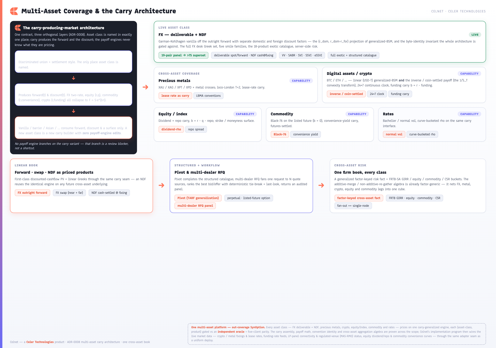
Underlying identity, the Carry forward/discount producer, and asset-class-agnostic payoff engines — mean a new asset class is a new carry builder with zero payoff-engine edits. FX is live and gate-validated; precious metals, crypto, equity, commodity and rates are the cross-asset capability on the same seam, with the linear book, structured Pivot, multi-dealer RFQ and a cross-asset risk cube built on top.4.1 The cross-asset architecture: identity, carry, agnostic payoff
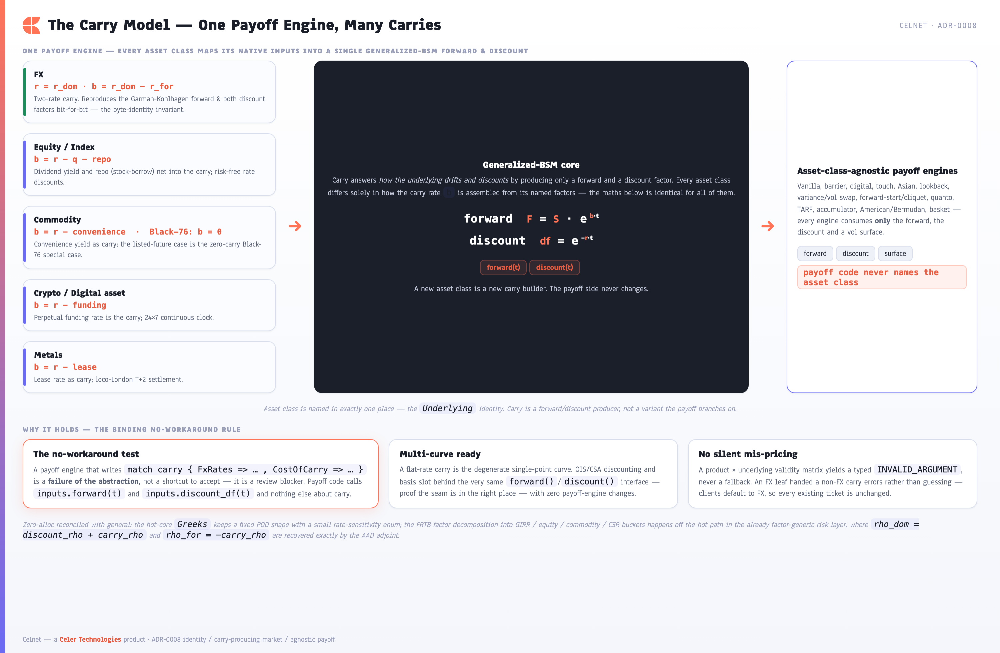
F = S·e^(b·t) and discount df = e^(−r·t): FX (b = r_dom − r_for, reproduced bit-for-bit), equity (b = r − q − repo), commodity (b = r − convenience, the listed-future Black-76 case b = 0), crypto (b = r − funding) and metals (b = r − lease) differ only in how b is assembled from named factors. The asset-class-agnostic payoff engines consume only the forward, discount and surface; a binding no-workaround rule makes a carry-variant match in payoff code a review blocker, a multi-curve-ready seam slots OIS/CSA discounting behind the same interface, and a typed INVALID_ARGUMENT validity matrix replaces any silent fallback.Celnet began FX-only at three load-bearing seams that ran through every layer: the VanillaInputs/Greeks shape in celnet-types (Garman-Kohlhagen with r_dom/r_for and two rhos), the celnet-proto wire vocabulary (a 3-character CcyPair, {spot, vol, r_dom, r_for}), and the PricingModel plugin trait. ADR-0008's decision is to split that one fused FX seam into three orthogonal layers, each with a single concern — generalize in place, one clean contract, no schema_version, FX byte-identical.
| Layer | Concern | What it is |
|---|---|---|
| 1 · Identity | Name the asset class — once | An Underlying discriminated union (Fx(CcyPair) today; Metal/DigitalAsset/Equity/Listed as additive enum growth) carrying asset class plus settlement style (deliverable / cash@fixing / inverse-coin) and quote orientation. This is the only place asset class is named anywhere in the platform. |
| 2 · Market | How the underlying drifts & discounts | Carry is a producer of forward(t) and discount(t) — not a variant pricers branch on. FX two-rate, equity (r,q), commodity (r,convenience) and crypto (r,funding) all collapse to generalized-BSM F = S·e^(b·t), df = e^(−r·t); they differ only in how b is assembled from named factors. |
| 3 · Payoff | Price the option — class-blind | Vanilla, barrier, Asian and every other engine consume forward(t), discount(t) and a vol surface only. A new asset class is a new Carry/MarketState builder with zero payoff-engine edits. |
Generalized-BSM with FX as a projection. The unifying mathematics is the generalized Black-Scholes-Merton (r, b) form: an option's forward is F = S·e^(b·t) and its discount is e^(−r·t). FX is simply the (r, b) = (r_dom, r_dom − r_for) projection — Garman-Kohlhagen falls straight out, and Carry::FxRates reproduces the existing FX forward and discount bit-for-bit. That byte-identity invariant is not a nicety; it is the gate the entire architecture is validated against (the golden CSV plus the conformance corpus across all five clients, every value compared on its raw to_bits representation). Equity is b = r − q (continuous dividend yield, with a repo spread folded in as b = r − q − repo); commodity is b = r − convenience (and Black-76 on a listed future is the degenerate b = 0 priced off F directly); crypto is b = r − funding. One forward/discount producer, many carry assemblies.
The no-workaround test (binding). A payoff engine that does match carry { FxRates => …, CostOfCarry => … } is a failure of the abstraction, not a shortcut. Payoff code calls inputs.forward(t) / inputs.discount_df(t) and nothing else about carry; any such branch in payoff code is a review blocker. This is what makes "a new asset class is a new carry builder" true rather than aspirational — an NDF on a future crypto or metal underlying reuses the identical linear engine, and a crypto linear vanilla reuses the identical generalized-BSM math the FX leaf already uses.
Sensitivities: a fixed zero-alloc hot core plus a factor-keyed risk layer. The Greeks strip lives in the pinned, allocation-free hot core, so it keeps a fixed Copy/POD shape — rate sensitivities are a small fixed enum (RateSensitivities::Fx{rho_dom, rho_for} / Carry{discount_rho, carry_rho}), never an allocating factor map. The decomposition into FRTB GIRR/equity/commodity buckets happens off the hot path at the risk layer, whose roll-up algebra is already factor-generic. The FX relation is exact and recovered by the existing AAD adjoint: rho_dom = discount_rho + carry_rho, rho_for = −carry_rho. This is how "general" reconciles with "zero-alloc" — generality where it costs nothing, fixed POD where latency is budgeted.
Multi-curve-ready by construction, and intuitive for the FX user. A flat-rate Carry is the degenerate single-point curve; an OIS/CSA discounting curve with projection and basis slots in behind the same forward()/discount() interface with zero payoff-engine changes — the proof the seam is in the right place. On the wire the contract gains an Underlying oneof, a CarryModel oneof and RateSensitivities, but every client defaults to FX: an existing GUI ticket, a CELNET.PRICE cell, or celnet price EURUSD is unchanged — the asset-class selector is purely additive. There is no silent mis-pricing: a product × underlying validity matrix returns a typed INVALID_ARGUMENT rather than guessing, so an FX leaf handed a non-FX carry errors loudly instead of falling back.
Underlying/CarryModel generalization is additive at the contract level and generalize-in-place at the leaf level, so the FX path stays byte-identical while the carry producer becomes the single point of asset-class extension.4.2 The asset-class superset
On that architecture sits the asset-class superset — decisively exceeding SynOption's single-asset coverage and matching the heavy front-to-back platforms on span. Every class is delivered on the same carry seam, each a leaf (or carry assembly) reachable through forward()/discount(), each with its own settlement specifics and its own independent oracle. FX carries the full measured truth-gate and golden-table proof today; the other classes are delivered on the identical carry-generalized engine through Celnet's implementation program, each grounded in a validated method and an oracle so it lands as a composable leaf rather than a rewrite. This is comprehensive multi-asset capability on a single coherent contract — one platform spanning the whole asset spectrum where the single-dealer incumbents cover one band.
| Asset class | Carry / method | Settlement & conventions | Status |
|---|---|---|---|
| FX — deliverable + NDF | Garman-Kohlhagen = generalized-BSM (r_dom, r_dom−r_for) | Deliverable spot/forward; NDF cash-settled in the convertible currency at a named FixingSource; 19-pair panel growing toward a >75 superset | Live |
| Precious metals — XAU/XAG/XPT/XPD + crosses | GK with the metal leg's lease rate in place of a foreign deposit rate (b = r_quote − lease) | Loco-London T+2; metal as base, premium in the quote currency (unadjusted); metal crosses on London ∩ quote-centre; LBMA conventions | Capability |
| Digital assets / crypto — BTC/ETH/… | Linear: agnostic generalized-BSM with funding carry b = r − funding. Inverse/coin-settled: the 1/S_T-denominated payoff via a numeraire change (the new payoff shape) | 24×7 continuous trading clock (no weekend/holiday roll); USD(T)-margined vs inverse/coin-margined; UTC exchange-fixed expiry instants; strike/log-moneyness smile | Capability |
| Equity / index | Generalized-BSM with dividend + repo carry b = r − q − repo; carry_rho = dividend-rho | Cash settlement in the index/quote currency; contract multiplier; strike/moneyness surface | Capability |
| Commodity — listed-future options | Black-76 on the future (b = 0, priced off F); spot+convenience b = r − convenience for an option on spot/forward | Futures-settled (cash at the future's settlement); convenience-yield carry | Capability |
| Rates | Bachelier / normal vol, curve-bucketed rho | Delivered on the same carry interface through Celnet's implementation program — a normal-vol leaf and curve-bucketed rho on the finished seam | Capability |
The crypto inverse contract — the precise part. The genuine novelty in crypto is not the linear (USD/USDT-margined) contract, which is plain generalized-BSM and falls straight out of the funding carry; it is the inverse / coin-margined contract, where the premium, the payoff and the P&L are all denominated in the base coin. An inverse option pays max(φ(S_T − K), 0) / S_T coins per USD-notional-1 — and that 1/S_T factor makes the payoff a genuinely non-linear function of the terminal price with a real convexity/measure subtlety, not a rescaled vanilla. Celnet treats it as a distinct payoff shape with its own pricer derived from the share-/coin-measure numeraire change, gated three independent ways: a code-disjoint Monte-Carlo simulation (within reported standard error), an independent Gauss-Hermite quadrature of the raw payoff, and a structural sandwich (V_inverse · S_0 > V_linear for a convex payoff) that fails loudly on a naive rescale. The coin-measure delta/gamma/vega are reported in coins — a coin-margined desk hedges in coins.
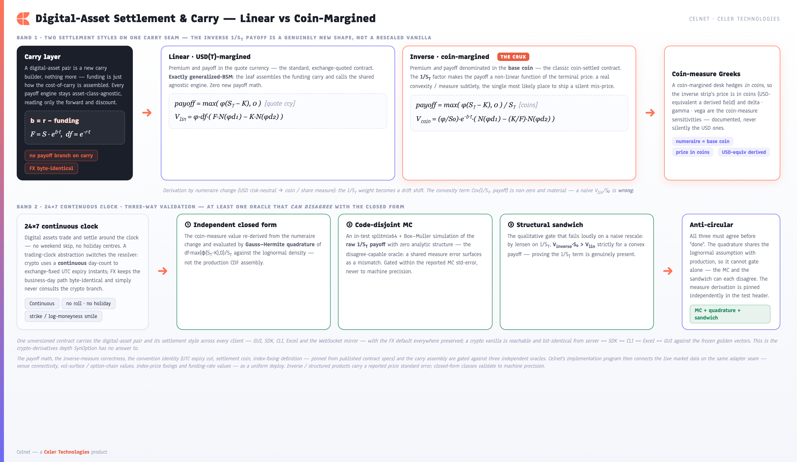
b = r − funding, F = S·e^(b·t), and calls the shared agnostic engine with zero new payoff math). The inverse / coin-margined contract is a genuinely new payoff shape whose 1/S_T factor — premium and payoff in the base coin — carries a real convexity/measure subtlety, priced by a numeraire change into the coin/share measure (V_coin = (φ/S₀)·e^(−b·t)·(N(φd₁) − (K/F)·N(φd₂))) with coin-measure delta/gamma/vega rather than silently the USD ones. The 24×7 continuous trading clock (no weekend skip, no holiday centres, exchange-fixed UTC expiry) sits beside a three-way validation that always keeps an oracle able to disagree — an independent Gauss-Hermite quadrature, a code-disjoint splitmix64 Monte-Carlo of the raw 1/S_T payoff within its reported standard error, and the structural sandwich V_inverse·S₀ > V_lin — surfaced bit-identically across all five clients. The payoff math, measure correctness, convention identity and carry assembly are proven on the engine today; live venue connectivity, vol-surface/option-chain values, index-price fixings and funding-rate feeds are delivered through Celnet's implementation program on the same carry seam.Settlement and convention depth, per class. Crypto runs a Continuous trading-clock abstraction (every day a business day, no weekend skip or holiday centre) rather than special-casing crypto inside the FX calendar — FX keeps its business-day path byte-identical, and the crypto path simply never consults the weekend logic. Metals carry a lease rate as the carry leg modelled in place of a foreign rate, so the existing XAUUSD/XAGUSD path stays byte-identical while XPT/XPD and metal crosses become nameable, loco-London T+2 on the LBMA calendar. The crypto and equity smiles are strike/log-moneyness-axis (exchange option chains by strike), reusing the surface core's arbitrage-free interpolator and the SVI/SSVI/eSSVI parametric fits unchanged — the FX delta-axis machinery is simply not on those paths.
4.3 Linear products, structured additions & multi-dealer RFQ
The linear book. FX outright forward, FX swap (near + far legs) and the non-deliverable forward become first-class priced products, not merely derived forward() math — a dedicated celnet-linear leaf computes discounted-cashflow PV and the linear Greeks through the same carry seam. A forward's PV is side · notional · df_settle · (forward_rate − strike) with forward_rate = spot · carry.forward_factor(t) — asset-class-agnostic, so an NDF on any future cross-asset underlying reuses the identical engine. The validation is deliberately non-circular (the discipline against a circular oracle that re-derives the same S·e^((r_d−r_f)t) the production code uses): an external QuantLib FxForward engine as the independent route, plus structural identities a wrong implementation cannot satisfy — a forward struck at the fair forward has PV exactly zero, PV is linear in notional, a long-and-short forward at the same rate nets to zero, and an NDF and a deliverable forward of equal terms share the same risk-neutral PV when settled in the same numeraire.
| Linear product | PV | Independent oracle |
|---|---|---|
| FX outright forward | side · notional · df · (F − K) | QuantLib FxForward + fair-forward⇒PV-0 + notional-linearity + t→0 undiscounted limit |
| FX swap (near + far) | Sum of two opposite-side outright forwards | QuantLib forward-points identity + near==far opposite-side netting to zero |
| NDF | side · notional · df_settle · (F − K) in the convertible currency | Hand-derived literal + NDF==deliverable-forward-PV in the same numeraire |
Structured additions. Pivot — the one structured type the incumbent venue has that Celnet lacked — completes the structured catalogue: a TARF generalization with a pivot strike that switches the client between two enhanced rates, a cumulative knock-out target and adverse-leg leverage, modelled as a strip of periodic fixings on the existing Monte-Carlo stack (counter-based RNG, antithetic pairs, Welford standard-error accumulator, exact per-fixing GBM terminal law) with a reported price standard error. It is gated by a code-disjoint Monte-Carlo reimplementation and a degenerate limit: with the pivot set equal to the strike, the payoff is identically a TARF, asserted under common random numbers against the already-independently-gated TARF. Two further new payoff shapes ride the same carry seam — a PerpetualOption (Merton/McKean perpetual closed form, cross-checked by a long-but-finite American converging from below) and a ListedFutureOption (Black-76, QuantLib-gated), with a cross-asset basket sandwich (worst-of ≤ single-leg ≤ best-of) proving the new shapes compose under the agnostic carry seam.
Multi-dealer RFQ aggregation. The single-dealer incumbents' true moat is the multi-bank venue, not product depth. Celnet's RFQ aggregation workflow (celnet-rfq) fans one QuoteRequest to N quote sources concurrently — internal Celnet pricers and external LP adapters over the existing FIX 4.4 engine — collects two-way bid/offer responses, ranks the best bid (max bid premium) and best offer (min offer premium), applies a deterministic tie-break (earlier timestamp, then lexicographically smallest stable LP id) and a timeout/last-look (non-responders dropped from lp_count; a winner past its valid_until rejected and the next-best promoted), and returns an audited, ranked panel with lp_count/lp_won consistency. The aggregation, ranking, tie-break and last-look algorithm is built and validated against an injected ground-truth ladder over a ≥3-LP loopback panel (so the oracle can disagree by construction). Live LP-panel connectivity over WAN FIX and regulated-venue (MAS-RMO) operation are delivered through Celnet's implementation program on the same finished seam — the multi-bank venue the single-dealer incumbents are built around, reached without a rewrite.
One ranked panel, every client. The SDK, CLI and GUI see the identical ranked multi-dealer panel — best bid/offer highlighted, the per-LP ladder, the won-by attribution — because there is exactly one aggregation engine behind one contract, with the internal pricer always present so the panel has at least one native dealer. The order path the venue would see is the order path the GUI sees.
![Celnet's multi-dealer RFQ aggregation: one QuoteRequest fans out concurrently to N quote sources (an always-present internal pricer plus external FIX LP adapters), each returning a two-way bid/offer; the engine ranks best-bid/best-offer with a deterministic tie-break, drops timed-out and last-look-stale responders, and books the ranked winner over the keyed line-bound token path, one panel bit-identical across all clients, with live LP connectivity delivered through the implementation program on the same seam.](assets/celnet-capabilities/fig-18-rfq-aggregation.png)
QuoteRequest fans out concurrently over an object-safe QuoteSource panel to N quote sources — an always-present internal Celnet pricer plus external FIX LP adapters over the celnet-fix 4.4 initiator engine — each returning a two-way bid/offer with an epoch and valid_until. The engine ranks best-bid (highest premium) and best-offer (lowest premium) with a deterministic earliest-epoch-then-smallest-LP-id tie-break, drops timed-out non-responders and rejects last-look-stale winners (promoting the next-best), then books exactly the ranked winner by (quote_id, lp_id) over the same keyed line-bound token path as click-to-trade/FIX, with lp_count/lp_won consistency gated against an injected ground-truth ladder. The one ranked panel is bit-identical across GUI, SDK, CLI and Excel; the aggregation/ranking/tie-break/last-look algorithm plus FIX framing over a loopback initiator/acceptor pair are proven today, while live LP-panel connectivity and regulated-venue (MAS-RMO) operation are delivered through Celnet's implementation program on the same seam.4.4 Cross-asset risk: one firm book, every class
The risk layer generalizes the same way the pricing layer does: in place, FX byte-identical, additive everywhere else. The firm-wide OLAP position-fact cube already nets convention-canonicalized vanilla and exotic legs into a common numeraire; the cross-asset evolution widens the fact (an asset-class tag, a generic factor set, an underlying reference) while leaving the algebra untouched — because the additive-merge / non-additive-re-gather roll-up is already factor-generic. The non-negotiable invariant is that the existing FX firm_aggregate == single-node parity stays byte-green to 1e-12 after the widening; the additive roll-up never reads the asset-class tag (it sums canonical Greeks regardless of class), and only the non-additive re-pricers route on the tag to the right asset-class leaf — exactly as the cube already routes a barrier to the exotic pricer versus a vanilla to the FX leaf.
The factor-keyed risk layer is where ADR-0008's "general meets zero-alloc" reconciliation pays off: the hot-core RateSensitivities are projected, off the hot path, into FRTB-bucketed factors — FX (rho_dom, rho_for) into the two legs' GIRR vertices; equity (discount_rho, dividend_rho) into GIRR plus equity-repo; commodity (discount_rho, convenience) into GIRR plus commodity carry. The FRTB-SA SbM machine — buckets, the three-scenario correlation max, K_b, the cross-bucket roll-up and curvature — is already risk-class-agnostic (it takes caller-supplied risk weights and correlations as data, never compiled in), so the cross-asset extension adds the GIRR / equity / commodity / CSR bucket structure and a factor-projection, not a new kernel.
| FRTB-SA risk class | Bucket structure | Cross-asset role |
|---|---|---|
| GIRR | Per-curve tenor-vertex delta buckets; intra-bucket ρ by tenor distance and same/different-curve, cross-bucket γ | The shared rate-risk vertices every class's discount/carry rho lands on — FX, metal, crypto, equity and commodity legs net here |
| Equity | The prescribed equity buckets (large/small cap × sector + indices), spot + repo sub-classes | Equity-option spot and repo factors |
| Commodity | The prescribed commodity buckets (energy/metals/agri/…), same-/different-commodity intra-bucket ρ | Commodity-option and metal carry factors |
| CSR non-securitised | Sector / credit-quality buckets | Delivered and parity-gated for cross-asset completeness; sourced when a credit-linked leg emits CSR factors |
Every FRTB constant is re-derived from the BCBS primary text in the parity oracle (the discipline that caught a real circular-oracle bug in the FX low-correlation floor), the oracle is a longhand independent recomputation that never calls the production roll-up, and a constant-pinning gate fixes the correlation transform to hand-computed values with a negative control proving it fails on a wrong floor. The result is one cross-asset firm book — FX, metal, crypto, equity and commodity legs netting per factor into a single roll-up whose fan-out equals the single-node aggregate, with a real multi-class capital number rather than an FX-only approximation.
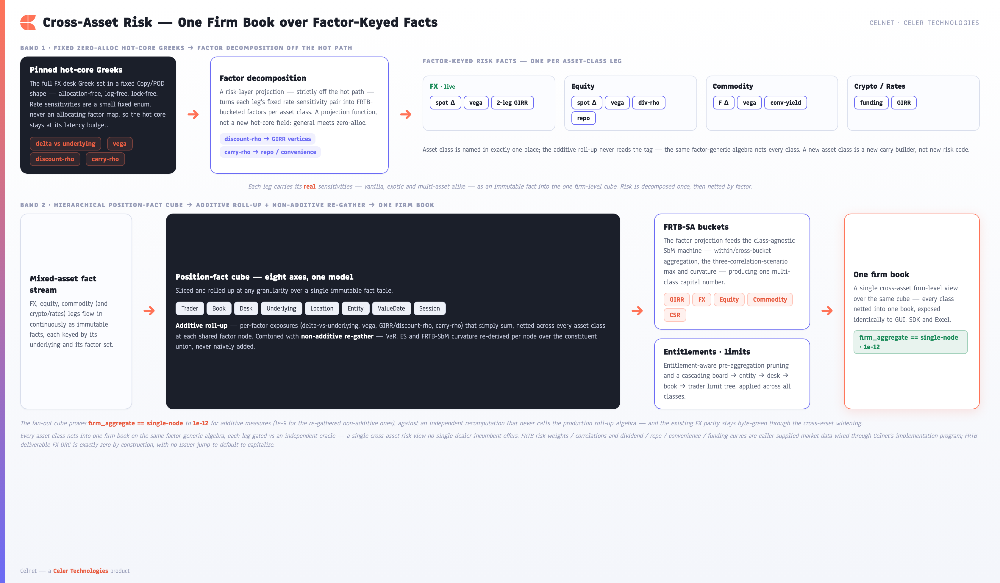
Copy/POD shape (delta, vega, discount-rho, carry-rho — a small fixed enum, never an allocating factor map); a risk-layer projection off the hot path decomposes those rate sensitivities into FRTB-bucketed factors per class (FX, equity dividend/repo, commodity convenience-yield, crypto and rates on the same carry seam), with asset class named in exactly one place. Each leg flows as an immutable factor-keyed fact into the eight-axis hierarchical position-fact cube, where an additive per-factor roll-up that never reads the asset-class tag nets across all classes alongside non-additive VaR/ES and FRTB-SbM curvature re-gathered per node, projecting into the class-agnostic SbM machine over GIRR/FX/equity/commodity/CSR buckets, pruned by entitlements and a cascading limit tree, and collapsing to one cross-asset firm book exposed identically to GUI, SDK and Excel — proving firm_aggregate == single-node to 1e-12 (1e-9 for re-gathered non-additive measures) with the existing FX parity staying byte-green. Dividend/repo/convenience/funding curves and FRTB risk-weights/correlations enter as caller-supplied data, sourced from the firm's curve estate; FX deliverable DRC is a documented, cited zero — there is no issuer jump-to-default in deliverable FX.ADR-0008 carry architecture · 6 asset classes (FX live + 5 cross-asset) · generalized-BSM (r,b) with FX byte-identical · linear forward/swap/NDF · structured Pivot · multi-dealer RFQ · FRTB-SA GIRR/equity/commodity/CSR in one cube
The competitive consequence is that Celnet is not an FX-options platform with bolt-on asset classes, nor a generic multi-asset engine that loses the FX desk's conventions — it is a single coherent contract where FX is the zero-friction default, every other asset class is reached by the same carry seam with no payoff-engine rewrite, and every cross-asset claim is grounded in a validated method and an independent oracle. The architecture, the payoff math, the convention identity, the carry assembly and the aggregation algebra are proven and gated today; the non-FX leaves' live market connectivity — crypto and metal fixing values, funding-rate feeds, LP-panel sessions, dividend/repo and convenience curves — is delivered through Celnet's implementation program on those same finished seams. SynOption is a single-asset venue; Celnet is the whole asset spectrum on one engine.
5. State-of-the-Art Foundations & a Platform Built to Evolve
Why every method is the strongest published technique for its regime (the catalogue behind the §3 pricing), the architectural SOTA leap of the carry abstraction, and the continuous-evolution model that lands new research as a composable leaf.
Celnet is state of the art on two axes at once: the methods it computes with and the engineering that lets those methods scale, compose and evolve without a rewrite. The numerics are not a fixed library frozen at a point in time — they are a catalogue of the strongest academically-grounded techniques for each problem, each cited to its method or paper, each validated against an independent oracle, and each reachable identically from every client. The engineering is not a monolith that ossifies — it is a layered, one-way-acyclic Rust workspace whose load-bearing seams (the carry-producing market abstraction, the one unversioned contract, the pinned zero-allocation hot core, the executable golden-vector conformance regime) are explicitly designed so the latest research lands as a composable leaf or method rather than a re-architecture. This section maps the SOTA methods catalogue, the engineering evolutions that make the platform world-class, and the continuous-evolution model that keeps it there.
The academic-research-grounded methods catalogue
Every pricing, calibration and risk problem in Celnet is solved with the method the literature regards as state of the art for that regime, chosen for accuracy, robustness and scalability rather than expedience. Provenance lives in the doc comments and references — never in the public identifiers, which are purpose-named and vendor-neutral. The table maps each capability to its method and the published technique it descends from; the prose that follows draws out why each choice is the right one.
| Capability | State-of-the-art method | Reference / provenance |
|---|---|---|
| Vanilla FX pricing | Garman-Kohlhagen off the outright forward with dual discount factors | Garman-Kohlhagen; generalized-BSM F = S·e^{b·t} (ADR-0008) |
| Portfolio-scale Greeks | Reverse-mode adjoint algorithmic differentiation (AAD), O(1)-in-factors | Adjoint AD; celnet-vanilla::adjoint_greeks |
| Smile / surface | Vanna-Volga, SABR, raw-SVI, SSVI, eSSVI (maturity-dependent ρ), arbitrage-free by construction | Gatheral-Jacquier SSVI; Hendriks-Martini eSSVI no-arb calendar; extended_surface.rs |
| Local volatility | Dupire local-vol extraction feeding the exotic / PDE / LSV engines | Dupire; celnet-exotics/src/leverage.rs |
| Local-stochastic vol | LSV with particle-method leverage calibration | Particle calibration of the leverage function; LSV booking model |
| Stochastic vol (Heston) | Carr-Madan damped FFT integral ≈ Fang-Oosterlee COS, over a branch-cut-free characteristic function | Carr-Madan; Fang-Oosterlee COS; Cui-del Baño-Germano CF; celnet-heston |
| Arithmetic Asian | Turnbull-Wakeman moment-matching and Curran geometric-conditioning closed forms | Turnbull-Wakeman; Curran; celnet-exotics/src/asian.rs |
| Variance / volatility swaps | Log-contract 1/K² static replication; Carr-Lee convexity adjustment for vol | Demeterfi-Kamal-Zou / Carr-Madan; Carr-Lee; var_swap.rs / vol_swap.rs |
| American / Bermudan | PSOR free-boundary Crank-Nicolson FD and Longstaff-Schwartz LSM regression | Brennan-Schwartz PSOR; Longstaff-Schwartz; american.rs |
| Correlated multi-asset | Cholesky-correlated GBM Monte-Carlo for basket / best-of / worst-of | Cholesky factorisation; multiasset.rs |
| Variance reduction | Sobol RQMC with Owen-style nested scramble and Brownian-bridge construction | Joe-Kuo direction numbers; Owen scramble; principal-bisection bridge; celnet-qmc |
| Regulatory capital | FRTB-SA Sensitivities-Based Method (SbM), curvature, RRAO, DRC | BCBS MAR21-23; celnet-risk-cube/src/frtb.rs |
| Counterparty valuation | CVA / DVA / FVA over netting sets | XVA framework; celnet-xva |
| Acceleration | Closed-form and path GPU kernels; pathwise / likelihood-ratio GPU Greeks | Pathwise & LR Greeks; celnet-gpu (wgpu / Metal / CUDA) |
The choices are deliberate and defensible. The volatility surface uses five smile families because no single parameterisation serves a whole desk: Vanna-Volga reproduces the broker-quoted market, SABR and SVI/SSVI give parametric control, and eSSVI adds a maturity-dependent ρ with the Hendriks-Martini closed-form static no-arbitrage conditions — and because SSVI is byte-recovered as the constant-ρ special case of eSSVI, the strongest model is an additive extension, not a fork. Heston is priced two genuinely independent ways — a Carr-Madan damped Fourier integral and a Fang-Oosterlee COS expansion — over a branch-cut-free characteristic function, so the smile a desk calibrates is free of the integration artefacts a naive CF would induce. American and Bermudan options are solved by a PSOR free-boundary Crank-Nicolson finite-difference scheme and cross-checked by Longstaff-Schwartz least-squares Monte-Carlo regression, the two industry-standard early-exercise methods agreeing before a price is trusted. Variance reduction is not an afterthought: Sobol randomised QMC with an Owen-style nested scramble and a Brownian-bridge path construction delivers measured order-of-magnitude error reduction over plain Monte-Carlo on the exotic engines, with the direction numbers exposed for GPU reuse. And Greeks at portfolio scale are computed by genuine reverse-mode AAD — one reverse sweep yields the whole first-order block plus second-order gamma/vanna/volga — turning the cost of risk from O(factors) bump-and-revalue into O(1)-in-factors, the enabling technique for re-deriving a firm book's sensitivities in one sweep per position.
Method provenance, never in the API. The mathematical lineage of every method is recorded in code doc comments and the docs corpus — Garman-Kohlhagen, Gatheral, Hendriks-Martini, Carr-Madan, Fang-Oosterlee, Turnbull-Wakeman, Curran, Demeterfi-Kamal-Zou, Carr-Lee, Longstaff-Schwartz, Joe-Kuo, Owen, BCBS MAR. The public surface stays purpose-named and vendor-neutral (inputs are VanillaInputs, not a person's name; a smile is selected as eSSVI, not a citation), so the strongest academic technique is delivered without leaking provenance into the contract.
The architectural SOTA leap: a carry-producing market abstraction
The single most consequential engineering evolution is the cross-asset carry architecture defined in ADR-0008. It separates the one fused FX seam into three orthogonal layers — identity (an Underlying discriminated union naming asset class and settlement style), market (a Carry that produces a forward and a discount factor rather than a variant payoff engines branch on), and payoff (asset-class-agnostic engines that consume forward(t), discount(t) and a vol surface and nothing else). FX two-rate carry, equity dividend-and-repo, commodity convenience yield and crypto funding all collapse to the generalized-BSM forward F = S·e^{b·t}; they differ only in how the carry b is assembled from named factors. The binding no-workaround test makes this real: a payoff engine that pattern-matches on the carry variant is a review blocker, not a shortcut. This is the SOTA leap from an FX-options platform to a cross-asset derivatives platform — and it is built so the next asset class is a new carry-and-market builder with zero payoff-engine edits. The asset-class superset this unlocks, and its independent-oracle validation, are detailed in §4 (Multi-Asset).
The abstraction is reconciled with the hot core rather than fighting it. Because Greeks lives in the pinned zero-allocation hot core, it keeps a fixed Copy/POD shape — rate sensitivities are a small fixed enum (RateSensitivities), not an allocating factor map — and the factor decomposition into FRTB GIRR / equity / commodity buckets happens off the hot path at the risk layer, whose roll-up algebra is already factor-generic. The FX relation is exact and recovered by the existing AAD adjoint. And the seam is in the right place by construction: a flat-rate carry is the degenerate single-point curve, so a future multi-curve OIS/CSA discounting model slots behind the same forward()/discount() interface with no payoff-engine change — the proof the abstraction generalises forward, not just sideways.
| Layer | Single concern | Why it is SOTA |
|---|---|---|
Identity — Underlying | The only place asset class is named (FX, metal, digital-asset, equity, listed) | Additive enum growth; FX is the default arm, so existing tickets are unchanged |
Market — Carry | Produces forward(t) / discount(t) from named factors | Two-rate / dividend-repo / convenience / funding all collapse to generalized-BSM |
| Payoff engines | Consume forward, discount and a vol surface only | A new asset class needs zero payoff-engine edits — the no-workaround test enforces it |
| Risk layer | Factor decomposition into FRTB buckets, off the hot path | Keeps the hot-core Greeks fixed-shape and zero-alloc while staying factor-general |
One unversioned contract, zero legacy — evolution in place
Celnet has exactly one clean, current contract. There is no schema_version, no N/N-1 negotiation, no back-compatibility shim, and no mixed-version deployment window — a deliberate engineering stance that lets the platform evolve in place rather than accreting legacy. The vocabulary generalises by full cutover: the wire gains an Underlying oneof, a CarryModel oneof and carry-tagged RateSensitivities, with FX as the first-class default arm so every existing flow stays byte-equivalent after the codec maps the legacy field into the new union. New payoff shapes (forward, swap, NDF, pivot, perpetual, listed-future option) get new oneof arms; existing arms become underlying-agnostic for free. Superseded code is deleted, not deprecated. The result is a contract that absorbs a new asset class or product as a purely additive change while remaining a single source of truth across all five clients — and a server-enforced product × underlying validity matrix that rejects an unsupported combination with a typed error rather than ever silently mis-pricing.
Executable conformance and independent-oracle verification
State-of-the-art numerics are worthless if they drift from their claims. Celnet's verification regime is itself engineered to SOTA: every capability claim is codified as an executable parity row against an independent oracle that can disagree — a QuantLib golden table, a closed-form limit, a published reference value, or a deliberately code-disjoint Monte-Carlo with its own RNG — so a correct-looking-but-wrong implementation surfaces loudly. The discipline is explicit about its own failure modes: the regime hunts circular oracles (a second implementation that re-derives the same algebra), re-derives regulatory constants from primary text, and requires at least one structural or limit gate per product that the production code cannot satisfy if it is wrong. The cross-client guarantee is mechanical: a language-neutral golden-vector corpus is generated by the engine, each value cross-checked by its oracle, and a conformance harness boots the real edge and asserts that every surface equals the frozen vector and is reachable from every client. A coverage lint ties each proto arm to its vector and its parity row, so a new capability is not "done" until it is proven and reachable everywhere.
The anti-circular-oracle discipline. The hardest validation problem is an oracle that agrees with the code because it makes the same mistake. Celnet treats this as a first-class hazard: for every product the regime requires a route that can disagree — a code-disjoint Monte-Carlo for path-dependent payoffs, a QuantLib value for closed forms, a structural sandwich (worst-of ≤ single ≤ best-of) for baskets, a degenerate limit to an already-gated product. Regulatory constants are re-derived from the BCBS MAR text and pinned by a transform gate with a negative control, so a wrong correlation floor fails loudly rather than passing a circular self-check.
SOTA engineering: zero-alloc hot core, lock-free publication, consensus, sandbox
The runtime is engineered to the standard a mission-critical pricing platform demands. The pinned zero-allocation hot core does no allocation, locking or logging on the pricing path: wait-free single-producer/single-consumer rings feed pinned cores, and read-mostly state is published lock-free via an atomically swapped market-state snapshot and a single-writer seqlock top-of-book — telemetry offloads over a bounded, drop-on-full ring so observability is genuinely zero-cost on the hot path. Above the node, a leader-replicated event log with full Raft (election with Pre-Vote, conflicting-tail truncation, snapshot compaction and InstallSnapshot reseed) commits only on quorum and replays to bit-identical state. Hot, blue-green zero-downtime state handoff lets a new build take over a running book without dropping a price, and a durable checksummed append-only journal with compaction gives clean crash recovery. Extensibility is held to the same bar: the deterministic plugin sandbox runs Tier-2 WebAssembly models fuel-metered with no ambient authority and supports bit-identical replay (f64::to_bits identity across runs), so user-extended analytics are reproducible and auditable. Determinism is end to end — the counter-based RNG is bit-identical between CPU and GPU, and the distributed substrate replays a workload containing a 1-ULP value so the bits must match exactly.
| Engineering pillar | Mechanism | Guarantee earned |
|---|---|---|
| Zero-alloc hot core | SPSC rings, pinned cores, arc-swap snapshot, single-writer seqlock | No allocation / lock / log on the pricing path; nanosecond-scale latency |
| Lock-free publication | Atomically swapped market state + seqlock top-of-book + bounded telemetry ring | Read-mostly state and zero-cost observability without contention |
| Consensus | Full Raft: election + Pre-Vote, truncation, compaction, InstallSnapshot | Commit-on-quorum, bit-identical replicated replay |
| Hot upgrade / durability | Blue-green state handoff + checksummed append-only journal with compaction | Zero-downtime upgrades and clean crash recovery, bit-for-bit |
| Deterministic sandbox | Fuel-metered no-ambient-authority wasmi Tier-2 + bit-identical replay | Reproducible, auditable user-extended analytics |
Built to absorb the latest research — continuous evolution
The deepest claim is not that Celnet is state of the art today, but that it is built to stay state of the art. The seams are deliberately placed so the strongest new technique lands as a composable unit rather than a re-architecture: a new asset class is a new carry-and-market builder and a new payoff leaf on the agnostic engines; a new smile model is an additive arm on the surface selector; a new exotic is a new oneof shape with its parity row; a new pricing model — even a bespoke proprietary one a client builds — is a sandboxed plugin behind the frozen extension trait. Multi-curve discounting slots behind the existing forward/discount interface. New regulatory calibrations are caller-supplied data, never compiled-in constants. Because the workspace is one-way acyclic with small disjoint crates, this expansion fans out across parallel lanes without thrashing the frozen interface seams, and because every increment must pass the executable conformance and independent-oracle regime before it is "done", growth never trades correctness for breadth. The cross-asset coverage already designed on this foundation — precious metals with a lease-rate carry, digital-assets including inverse coin-settled contracts with funding carry, equity dividend-and-repo, commodity Black-76, the linear forward/swap/NDF book, the structured Pivot, and multi-dealer RFQ aggregation — is the demonstration of the model: each is a leaf on the same architecture, validated by the same regime, reachable from the same five clients. The platform's design is its evolution strategy.
![Celnet's state-of-the-art evolution model: one clean unversioned contract evolved in place with zero legacy; the cross-asset architectural leap via three orthogonal layers (Underlying identity, Carry forward/discount producer collapsing every class to generalized cost-of-carry, agnostic payoff engines); an executable conformance regime of engine-generated golden vectors cross-checked by independent oracles feeding a five-client real-edge harness; and a continuous evolution loop (critique lenses → compose latest research → verify against oracle and parity gate → converge) feeding back onto the same single contract.](assets/celnet-capabilities/fig-19-sota-evolution.png)
schema_version, no version negotiation, generalize-and-delete behind a byte-identical no-regression gate). The architectural leap to cross-asset rests on three orthogonal layers (ADR-0008) — an Underlying identity union as the only place asset class is named, a Carry forward/discount producer where FX two-rate, equity (r,q), commodity convenience and crypto funding all collapse to generalized cost-of-carry F = S·e^(b·t), and asset-class-agnostic payoff engines, so a new asset class is a new carry builder with zero payoff-engine edits. An executable conformance regime of engine-generated golden vectors cross-checked by independent oracles (QuantLib golden tables, published closed forms, code-disjoint Monte-Carlo) feeds a five-client real-edge harness from which the parity matrix is generated. And a continuous evolution loop — critique lenses → compose the latest research as a method or disjoint leaf → verify against an oracle and parity gate → converge until two dry rounds — feeds back onto the same single contract without rewrite, every figure precisely labelled by its measurement context and every forward increment framed as a delivery step on a finished seam.What makes Celnet state of the art. The methods are the strongest the literature offers for each regime, cited and oracle-validated. The carry-producing market abstraction makes the platform genuinely cross-asset with zero payoff-engine branching. The one unversioned contract evolves in place with zero legacy. The executable golden-vector conformance regime proves every claim, every change, against oracles that can disagree. The pinned zero-allocation hot core, lock-free publication, full Raft consensus and deterministic plugin sandbox earn performance, resilience and reproducibility. And the seams are placed so the next breakthrough is a composable leaf — so the platform does not merely meet the state of the art, it is engineered to keep pace with it.
6. Performance & Latency — Pricing Is Never the Bottleneck
The measured latency ladder, the architecture that keeps the core hot, the cross-platform GPU path — and (§6.8 onward) the Open Quant SDK & tiered plugin host that runs a desk's private models inside the engine.
Celnet is engineered so that the maths is never what a counterparty waits on. The full FX desk valuation — price plus the complete 13-Greek set — runs in nanosecond-scale time on pinned, allocation-free hot cores; by the time a quote reaches the wire, network framing, not computation, is the only meaningful cost left. The decisive competitive point is not merely that Celnet is fast: it is that every latency figure below is measured, asserted by a regression gate that fails the build on breach, and labelled with exactly the scope it covers. Speed that is only asserted is no speed at all.
crates/celnet-bench/src/bin/core_load.rs) re-measures them on every run and exits non-zero if any percentile is breached.
6.1 The measured latency ladder
The headline budget lives in docs/ARCHITECTURE.md §1.2 as absolute per-option percentile ceilings. The core_load binary times each individual celnet_vanilla::greeks call — price plus the full 13-Greek set, precisely the quantity the budget governs — into a coordinated-omission-aware HdrHistogram across 10 million timed samples after a 2 million-sample warmup, with priority elevation and (where the OS permits) core pinning.
| Metric | §1.2 budget | Measured (M4, single core) | Margin |
|---|---|---|---|
| p50 | ≤ 2 µs | 42 ns | ~48× inside |
| p99 | ≤ 10 µs | 125 ns | ~80× inside |
| p99.9 | ≤ 25 µs | ~1.0–1.4 µs | ~18–25× inside |
| throughput | ≥ 1 M/s/core | ~13.0 M opt/s/core | ~13× |
These are host-local, single-core figures — the intrinsic cost of the pricing core, not a wire latency. The platform reports its own measurement scope rather than flattering it: on Apple Silicon, macOS exposes no per-thread CPU affinity, so pinning is a no-op there and the binary reports pinned: false while priority elevation still applies; on Linux CI both apply. The OS-jitter deep tail appears only at p99.99+, deeper than the gate, and is reported transparently rather than used to weaken it.

6.2 Architecture that keeps the core hot
The nanosecond figures are a consequence of a deliberate two-tier design: a non-async, core-pinned, busy-poll pricing core, joined to a concurrency-rich async edge by wait-free single-producer/single-consumer rings. The critical path does nothing but compute.
| Layer | What it does for latency |
|---|---|
| Pinned hot cores | Zero-allocation, lock-free, log-free valuation — the critical path only computes |
| Wait-free SPSC rings | Single-producer/single-consumer handoff bridges the async edge to the cores without contention |
| Read-mostly state publication | Atomically-swapped whole-MarketState snapshots (arc-swap) and a single-writer seqlock top-of-book let readers price without blocking writers |
| Lock-free SPMC fan-out ring | Each pair's tick is broadcast to all subscribers from one producer with exact, accounted conflation under back-pressure — never a torn read, never an allocation (celnet-fanout) |
| Cache-padded counters | Telemetry and bookkeeping never cause false sharing against the hot path |
| Blue-green state handoff | Hot upgrades swap state with zero downtime, so performance is sustained across deploys |
6.3 The surface-rebuild gate
Streaming a desk's smile in real time demands that the per-tick surface recompute also stays inside budget. A companion §1.2 gate (crates/celnet-bench/src/bin/surface_rebuild.rs) measures the sticky-delta recompute of all 11 standard tenors × 11 strikes for both the Vanna-Volga and SSVI models, asserting the p99 ≤ 150 µs budget. Measured: ~19.6 µs (VV) / ~7.8 µs (SSVI) — about 7.7× / 19× inside. The one-off cold calibration (~2.2 ms VV / ~3.4 ms SSVI) is reported but deliberately not §1.2-gated, because it runs on a quotes change, not on every spot tick — surfaced, never mis-gated against a budget that does not govern it.
6.4 A second, machine-independent gate: instruction counts
Wall-clock time floats with host load, so a CI gate on it must carry a generous tolerance. Celnet adds a complementary instruction-count gate (crates/celnet-bench/benches/iai_instructions.rs, via iai-callgrind/Callgrind) that measures a deterministic, machine-independent quantity — retired instructions, cache accesses and estimated cycles per pricing call — over price, greeks (the §1.2 quantity) and batch_greeks (a 64-strike slice). That makes it the right primitive for catching a code-level regression — an extra branch, a lost inlining, an accidental allocation — the moment it lands, with a tight baseline and no flake. Callgrind is Linux/Unix-only, so this runs as a dedicated Linux CI lane; the bench merely compiles on the M4 dev host, so it never affects local just check/nextest.
6.5 The cross-platform GPU path — correctness and ratios
For batch revaluation, Celnet drives a wgpu/Metal/Vulkan GPU backend (celnet-gpu) whose results are reconciled node-by-node against the f64 CPU oracle and the QuantLib golden tables, using a bit-identical counter-based Philox-4×32-10 RNG implemented byte-for-byte in both Rust and WGSL. The gpu_load harness sweeps the batch size and reports per-dispatch latency tails plus a host-local GPU/CPU throughput ratio:
| Batch (paths) | GPU/CPU ratio | Regime |
|---|---|---|
| 4 096 | 0.68× | Dispatch overhead dominates small batches |
| 262 144 | ~16.5× | Committed CI-sized baseline (baselines/gpu_batch.json), regression-gated by gpu_gate |
| 1 048 576 | ~53× | Device saturated — the GPU pulls decisively ahead |
When no GPU adapter is present the backend falls back transparently to the CPU oracle (Mesa Lavapipe in headless CI), and the run is labelled a completes-within-ceiling check rather than a speedup claim. The GPU estate is broad: a closed-form batch kernel, a multi-step path-dependent kernel, pathwise/LR Greeks, and an Owen-scrambled Joe-Kuo Sobol' QMC path (celnet-qmc, ~37.7×/88.5× measured variance reduction) reused across exotics, XVA and the GPU kernels — all reconciled three-way GPU-f32 ≈ CPU-f64 ≈ golden within a derived (not asserted) f32 bound, with a CPU↔GPU Sobol' known-answer test.
6.6 The wire-path and observability
The in-core figures are the compute floor; the figure a counterparty actually observes is the wire-path round-trip. The wire_load harness spins the real celnet_server::Edge in-process on a loopback port, opens concurrent RFS streaming subscriptions as sustained background load, and times RequestQuote round-trips through the full tonic/gRPC/HTTP-2 stack + codec + async⇄core SPSC hop + pricing. The wire-path sits ~4 orders of magnitude above the in-core floor — dominated by framing, not by the model — which is exactly the design intent.
Mission-critical visibility costs nothing on the hot path. Latency is captured into coordinated-omission-aware tail-percentile histograms, and those same percentiles are surfaced live to clients on the stream Heartbeat (server-side p50/p99/p99.9 in nanoseconds, plus conflation-drop counts). Telemetry leaves the hot core over a bounded, drop-on-full ring: under pressure the platform sheds observability data, never throughput. The pinned core stays log-, lock-, and allocation-free; everything instrumental is offloaded. All of this is held by the bench_gate binary, which runs four arms on every PR — the in-core §1.2 absolute gate, the surface-rebuild §1.2 absolute gate, the wire-path relative-regression gate (fail on >2× baseline), and the fleet §11 loopback SLO gate — all of which must pass.
6.7 The performance delivery program on the engine
The gates establish the in-core §1.2 truth-gate, the surface-rebuild gate, the instruction-count gate, and the loopback wire/fleet benches as continuously-proven properties — the measured compute foundation. Three classes of absolute headline are delivered through Celnet's implementation program, each lit up against the target hardware and network topology on a finished seam:
- Cross-host wire p99 and the SOTA kernel-bypass NIC datapath — delivered on production cross-host topology; the loopback benches already establish the compute + framing lower bound the program builds on.
- The §11 absolute wire-latency SLOs — delivered against the production network fabric.
- CUDA/NVIDIA absolute GPU throughput, the ≤50 ms exotic target, and the Workload-A/B absolute figures — delivered through the CUDA backend on NVIDIA hardware. GPU correctness and host-local ratios are proven today (Apple M4 Metal lacks f64), with the f64-correct kernels already in place so the program lights up the absolute throughput headline on the target accelerator.
Network framing — not computation — is the only meaningful latency floor, and Celnet states it as a shape backed by measured ratios and a SOTA kernel-bypass datapath, never as a fabricated cross-host number.
6 (cont.) · Extensibility — The Open Quant SDK & Tiered Plugin Host
The user-extensibility edge the closed venues structurally lack — frozen model traits, a self-describing registry, and a tiered sandbox so a desk extends the already-deep catalogue with private IP, without forking Celnet.
A pricing platform is only as good as the models a desk can put inside it. Celnet ships a functionally complete analytics estate already — vanilla, the full first-generation exotics, structured and path-dependent products, American/Bermudan early exercise, correlated multi-asset baskets, an LSV booking model and a standalone Heston engine, all on one wire — yet treats the desk's own intellectual property as a first-class extension of that estate. Proprietary models run inside the engine, on the same registry and the same routing as the built-in analytics, without ever leaving the firm and without forking the platform. The vehicle is the Open Quant SDK — one frozen, runtime-agnostic contract — served by a tiered plugin host that trades performance against isolation while keeping every shipped tier deterministic and bit-identical on replay.

6.8 The Open Quant SDK — one contract, any model
The SDK (celnet-plugin-api) is a small, stable set of Rust traits describing the three things a model can be, plus the metadata and discovery that let the engine route to it without hard-wiring (crates/celnet-plugin-api/src/{pricing,smile,calibration,descriptor,registry}.rs):
| SDK surface | What a quant implements | What Celnet does with it |
|---|---|---|
PricingModel | Price and the full Greek vector for an instrument | Routes pricing and risk through the model exactly as it does the native vanilla and exotics engines |
SmileModel | A smile/surface parameterisation (extends the core Smile seam) | Marks, recalibrates, and arbitrage-gates the model alongside the built-in Vanna-Volga, SABR, SVI, SSVI and eSSVI families |
Calibration | A fit from market observables to model parameters | Drives the model from the same broker risk-reversal/butterfly/ATM and market-series inputs the built-in calibrators consume |
ModelDescriptor / ModelRegistry | A self-describing manifest (ModelId, ModelKind, Greek support) | Lets the engine discover, name, and route the model by purpose with no hard-coded wiring |
WIT interface mirror (wit/celnet.wit) | — | Mirrors the contract one-to-one for the sandboxed tier so a guest model speaks the identical shape |
Because the contract is frozen and unversioned, a model written against it today keeps working as Celnet evolves — there is exactly one current contract, never an N/N-1 negotiation. A registered model is indistinguishable, at the call site, from a built-in one: the host registry is tier-blind (crates/celnet-plugin-host/src/registry.rs — register_native/register_wasm/load_wasm all land behind one model(id) lookup), so the engine routes a private smile model or a bespoke pricer through the same path that serves the standard catalogue. The desk uses the SDK to extend the shipped core with bespoke and structured products the firm wants to keep private — not to reach the catalogue, which is shipped.
6.9 The tiered host — performance and isolation, never one or the other
Not every model carries the same trust. A house model authored by the firm's own quants wants native speed; a model under evaluation, or one carrying third-party code, wants containment. The host (celnet-plugin-host) is a ladder of tiers behind the same contract, so the choice is a routing decision, not a rewrite.
| Tier | Execution | Isolation posture | Typical use | Status |
|---|---|---|---|---|
| Native (Tier-0) | In-process, native speed, monomorphized zero-alloc dispatch | Trusted, first-party | House models on the hot path | Shipped (native.rs) |
| WebAssembly (Tier-2) | Fuel-metered wasmi interpreter | No ambient OS access; capability-scoped | Untrusted or under-evaluation models | Shipped (wasm.rs) |
| Signed shared-object (Tier-1) | Loaded native object via stabby stable ABI | Cryptographically signed, publisher-allowlisted | Vetted partner models needing native speed | Implementation program |
| OS-sandbox (Tier-3) | Native under OS confinement | Kernel-enforced (Landlock / seccomp), Linux-only | Native models needing belt-and-braces containment | Implementation program |
The host runs the native and WebAssembly tiers, both gated; the signed-shared-object and OS-sandbox tiers are specified and seamed behind the identical frozen contract in docs/PLUGIN-HOST-ALT.md §3.4 / §3.5 and delivered through Celnet's implementation program, slotting in without a contract change.
Tier-0 — native (native.rs) adapts any first-party PricingModel to the tier-agnostic HostModel seam. It is generic over the concrete model, so the call is a direct, monomorphized, inlinable dispatch with zero per-call allocation — the hot-path property Tier-0 exists to preserve. There is no sandbox here by design; Tier-0 is trusted first-party code.
Tier-2 — the WebAssembly sandbox (wasm.rs) is the centre of gravity for untrusted code, and the advisory-clean replacement for the originally-planned wasmtime runtime (blocked under guardrail 7 by 2026 RustSec advisories). A user model compiled to a core Wasm module runs on the wasmi pure-Rust interpreter with no ambient operating-system authority — no WASI, no clock, no RNG, no threads, no filesystem, no network (crates/celnet-plugin-host/src/host.rs). The capability boundary is deliberately narrow: the only imports a guest may resolve are five host-provided mathematical primitives — exp, ln, sqrt, norm_pdf, norm_cdf (the exhaustive GRANTED_IMPORTS list) — each routed through the same rust-lang/libm the native tier uses. Any import outside that set is denied at link time with a precise, attributable error before the module is even instantiated.
The sandbox is hardened beyond capability-denial alone:
- Compute SLA. Every guest call runs under a per-call fuel budget (wasmi's deterministic instruction-cost counter, not wall-clock). Exhaustion interrupts the interpreter at the budget and yields a typed
HostError::FuelExhausted— never a hang or panic. Even a module's(start)function is fuel-bounded at load, so a runaway initialiser cannot hang the host. - Resource ceilings. A store-level limiter caps linear memory (64 MiB), table elements, memories, tables and instances; an over-budget
memory.grow/table.growtraps deterministically asHostError::ResourceLimitrather than returning the Wasm-1sentinel. - Narrowed feature set. The wasmi
Configdisables proposals a pricer never needs —memory64,bulk_memory,reference_types,tail_call— so a guest using them fails validation rather than widening the attack surface. - Boundary determinism. Every
f64crossing the ABI is NaN-canonicalised, so a malformed number can never leak non-determinism into the engine. - No
unsafe. The whole crate is#![forbid(unsafe_code)]; the wasmi interpreter is the only execution substrate, driven entirely through its safe API.
Four work-stream gates (WS-G) prove these properties, exercised by 20 tests in crates/celnet-plugin-host/tests/sandbox.rs: capability-denial (an unknown import fails to load), fuel-exhaustion bounded (a runaway guest traps within budget and does not hang, verified including the (start) path), replay bit-identity, and Tier-0 == Tier-2 interchangeability (a native model and its Wasm twin agree to the last bit through one tier-blind registry). A guest's own domain rejection surfaces as a model error, not a sandbox fault — so a Tier-2 verdict is indistinguishable from a Tier-0 one.
6.10 Determinism, replay, and the arbitrage self-check
Determinism is a platform guarantee, not a hope. A single Tier-2 model produces bit-identical results on replay — the same inputs reproduce the same outputs to the last bit (f64::to_bits-equal, including any canonicalised NaN), run after run, on every platform wasmi runs on — which is what makes plugin-priced trades auditable and reproducible across the firm. The host carries a deterministic replay harness (crates/celnet-plugin-host/src/replay.rs) that replays a fixed market snapshot through a model and asserts bit-identity across runs; the same fuel budget interrupts at the same instruction, so even a near-budget model replays identically. Cross-platform identity additionally requires the guest's transcendentals to be the platform-independent rust-lang/libm ones — which is precisely why the host exposes them as capabilities rather than letting the guest reach for an FPU intrinsic.
Bit-identity between a native and a Wasm implementation of the same pricer holds only when both perform the same sequence of IEEE-754 operations through the same libm. The harness proves the strong bit-exact claim for a deliberately op-order-matched twin; for an arbitrary pair, agreement is within the model's documented numerical tolerance, and a tolerance-based comparator is the right gate. Celnet states this distinction with engineering precision — the exact guarantee a firm's audit and reproducibility regime depends on.
A smile model loaded through the SDK is held to the same standard as the built-ins: a static (butterfly) no-arbitrage self-check is built into the SmileModel trait (crates/celnet-plugin-api/src/smile.rs — a model-free density-positivity test over the strike grid, in the spirit of the Carr-Madan call-spread conditions). A plugin therefore cannot quietly publish an arbitrageable surface; an arbitrageable grid is rejected with a typed error.
6.11 What it means for the desk
- Private IP stays private. Proprietary pricers and smiles run inside Celnet's engine — sandboxed, deterministic, hot-loadable — and the source never leaves the firm.
- Model evolution without downtime. New or revised models load into the running engine and inherit Celnet's zero-downtime blue-green state handoff; there is no rebuild-and-redeploy of the platform to ship a model change.
- No fork, ever. The frozen SDK means a desk extends Celnet rather than maintaining a private branch — bespoke coverage is additive on top of an already-complete built-in catalogue, and upstream improvements arrive cleanly.
- One discipline for every model. House and experimental models live behind the same contract, the same arbitrage gates, the same replay guarantee — so a model's trust tier changes how it is contained, never how it is called or trusted to be correct.
7. The API Contract, Cross-Client Parity, Excel & the Trader GUI
One unversioned contract consumed identically by five clients — the five service families, the streaming session, the SDK/CLI, the Excel add-in and the trader GUI — so a value is bit-identical wherever it is read.
Most derivatives desks run on a patchwork: a pricing terminal, a separate risk system, a vol-marking tool, a spreadsheet bridge, and a bespoke GUI — each with its own version negotiation, its own numbers, and its own opportunities to disagree. Celnet collapses that estate onto one unversioned wire contract consumed identically by five clients. There is no schema-version negotiation, no N/N-1 compatibility window, no privileged internal path — a single current contract that every surface speaks. This is the governing API-first rule: capability lives in the contract, never in a client, so the number a trader reads in the GUI is bit-identical to the one the Rust SDK returns, the CLI prints, and a spreadsheet cell spills.
What runs over that contract is the full FX-options catalogue — vanilla, the
complete first-generation exotics, structured and path-dependent products,
American/Bermudan early exercise, correlated multi-asset baskets, and an LSV booking
model — reachable from all five surfaces, with bit-identical values proven by an
executable parity matrix (docs/CLIENT-PARITY-MATRIX.md). The front-end is
just another client.
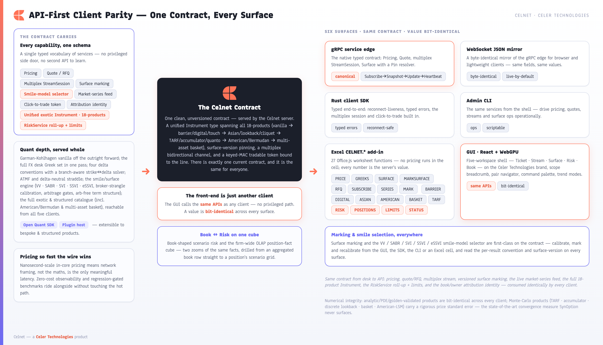
CELNET.* add-in are peers over the same five
service families — Pricing, Quote, StreamSession, Risk, Surface. A value is identical
wherever it is read, across both the binary gRPC edge and the byte-identical
WebSocket JSON mirror.7.1 The Five Service Families
The five gRPC services that map to how a desk works — price, RFQ lifecycle, stream, firm-scale risk, surface marking — plus the unified Instrument that carries every product on one wire.
The contract (crates/celnet-proto/proto/celnet.proto) is organised into
five gRPC services that map directly to how a desk works: get a price,
run an RFQ lifecycle, stream live markets, query firm-scale risk, and mark surfaces.
Every RPC is enumerated below.
| Service | RPC | Request → Response | Purpose |
|---|---|---|---|
| PricingService | Price | PriceRequest → PriceResponse | One-shot price plus the full 13-Greek risk set for any instrument, against live or a pinned marked surface; the response carries correlation_id, the surface_version it priced on, and price_std_error (set only for MC products). |
| QuoteService | RequestQuote | QuoteRequest → Quote | Request a firm two-way (RFQ): bid/mid/offer with a quote_id, a valid_until_nanos last-look window, Greeks, attribution, and an MC std-error when applicable. Idempotent on the request key. |
AcceptQuote | QuoteAccept → Execution | Accept a live quote and book the resulting execution. | |
RejectQuote | QuoteReject → RejectAck | Decline to trade; returns a typed acknowledgement, never an execution. | |
| StreamService | StreamSession | stream ClientStreamMessage → stream ServerStreamMessage | One bidirectional, multiplexed channel carrying many concurrent subscriptions — streaming prices, two-ways, observable series — with sequence-gap resync, in-place modify, and click-to-trade. A blotter watching hundreds of structures uses one session. |
| RiskService | ListPositions | ListPositionsRequest → ListPositionsResponse | List the open positions the cube aggregates (scoped + entitlement-pruned), each carrying its attribution. |
AggregateRisk | AggregateRiskRequest → AggregateRiskResponse | Roll the entitled facts up over an org dimension into a node tree of netted additive + re-derived non-additive measures in a reporting numeraire. | |
DrillRisk | DrillRiskRequest → DrillRiskResponse | Drill one node into its child sub-nodes and/or contributing positions (the Book → Risk drill), entitlement-pruned. | |
LimitStatus | LimitStatusRequest → LimitStatusResponse | Read the limit tree + utilization / RAG status for a scope node, including the hard-breach escalation flag. | |
| SurfaceService | GetSmile | GetSmileRequest → Smile | Read the calibrated smile for one (pair, tenor) on the delta axis. |
MarkSurface | MarkSurfaceRequest → MarkSurfaceResponse | Mark / recalibrate the surface for a pair from a broker quote set, under a chosen smile model, depositing it under a fresh surface_version. | |
Scenario | ScenarioRequest → ScenarioResponse | Reprice an instrument across a spot / vol / rate shock grid. |
Aggregation, common-numeraire conversion, non-additive re-derivation, entitlement
pruning, and limit RAG are all the server's job (celnet-risk-cube /
-normalize / -limits / -entitlements) — a client
never loops positions and sums.
The unified Instrument — one vocabulary, every product
A single Instrument type runs through Pricing, Quote,
Stream, and Scenario — the same vocabulary describes a vanilla, a digital, a barrier, a
TARF, a basket, or an American option, so the contract does not fork by product. The
payoff is a oneof product with 19 arms; each
Monte-Carlo-priced arm carries a price_std_error and is never presented as
machine-precision.
| # | Field | Product | Engine / method | MC std-error? |
|---|---|---|---|---|
| 7 | vanilla | Vanilla European | Garman-Kohlhagen closed form (analytic, or LSV via pricing_model) | — |
| 8 | strategy | Multi-leg strategy (RR / strangle / straddle / seagull) | Sum of vanilla legs (analytic) | — |
| 9 | single_barrier | Single-barrier knock-in / knock-out | Analytic + CN-Rannacher PDE / Philox MC, VV survival overlay (or LSV) | — / MC |
| 10 | double_barrier | Double-barrier | Analytic / PDE / MC | — / MC |
| 11 | digital | Digital (cash-/asset-or-nothing) | Closed form | — |
| 12 | touch | One- / no- / double-no- / double-one-touch | Closed form + VV overlay | — |
| 13 | variance_swap | Variance swap | Log-contract static replication (Demeterfi-DKZ / Carr-Madan) | — |
| 14 | volatility_swap | Volatility swap | Carr-Lee convexity-adjusted fair-vol strike | — |
| 15 | asian_option | Fixed-strike arithmetic-average Asian | Turnbull-Wakeman / Curran (closed form) | — |
| 16 | forward_start | Forward-start vanilla (strike reset) | Rubinstein dual-carry closed form | — |
| 17 | cliquet | Cliquet / ratchet (plain or clamped) | Σ forward-start legs (closed form), or clamped MC | clamped |
| 18 | quanto | Quanto (vanilla or digital) | Settlement-currency-converted closed form | — |
| 19 | tarf | Target-Redemption Forward | Geared-fixing knock-out Monte-Carlo | yes |
| 20 | accumulator | Accumulator (pivot accrual + up-and-out) | Monte-Carlo | yes |
| 21 | lookback | Lookback (floating / fixed strike) | Continuous closed form, or discrete MC | discrete |
| 23 | window_barrier | Window knock-out (active inside a calendar window) | LSV ADI-PDE (or MC); no closed form | MC |
| 24 | american | American / Bermudan early-exercise vanilla | PSOR free-boundary FD (default), or Longstaff-Schwartz LSM | LSM |
| 25 | basket | Correlated multi-asset (weighted basket / best-of / worst-of), N legs | Cholesky-correlated multi-asset GBM MC over scrambled-Sobol / Brownian-bridge | yes |
Field number 22 is not a product arm — it is pricing_model. The
catalogue is full: it spans vanilla → the complete first-generation exotics →
structured / path-dependent → American/Bermudan → correlated multi-asset basket → a
particle-calibrated LSV booking model.
Two first-class directives on every instrument
pricing_model(field 22,PricingModel) — the booking-model selector.PRICING_MODEL_DEFAULTroutes to the product's native analytic / closed-form engine and is byte-identical to the contract before the field existed.PRICING_MODEL_LOCAL_STOCH_VOLroutes the supported products (vanilla, continuously-monitored single-barrier knock-out, window-barrier) through the LSV booking engine — a particle-calibrated leverage surface over a stochastic-variance backbone on a 2-D ADI PDE. Selecting LSV for any other product is a hardINVALID_ARGUMENT, never a silent fallback. The directive travels on the instrument, so it reaches price / quote / stream / scenario uniformly.- The smile-model selector (
SmileModel) carried onMarkSurfaceRequest/ScenarioRequest: five calibration families —MARKET_HEDGE(vanna-volga, the default),STOCHASTIC_VOL(SABR),PARAMETRIC(SVI),PARAMETRIC_SURFACE(SSVI), andEXTENDED_SURFACE(eSSVI — maturity-dependent correlation, closed-form arbitrage-free). The contract also carries an attribution identity (BookId/Owner/AttributionRecord) keying every price and position to its place in the risk hierarchy.
Numerical disclosure as a contract feature.
PriceResponse.price_std_error and Quote.price_std_error are
presence-tracked: set only for Monte-Carlo-priced products (TARF, accumulator, discrete
lookback, clamped cliquet, basket, LSM American), absent for closed-form products whose
price is exact. The same disclosure crosses gRPC, the WS mirror, the SDK, the CLI, and
Excel — a client never mistakes an MC estimate for closed-form precision. XVA
(CVA/DVA/FVA, celnet-xva) computes CVA/DVA/FVA over netting sets on the
risk-neutral GBM exposure pipeline; Celnet's implementation program extends it onto
live CSAs / collateral / wrong-way risk on the same pipeline.
Surface-version pinning
Pricing and risk are only reproducible if everyone agrees on the surface. Every
marked surface is deposited under a fresh surface_version, and any pricing,
RFQ, or stream request can pin to a specific version through the
Pin resolver. An unknown version is rejected — never silently resolved to
the live surface — so a quote, a risk report, and a re-priced ticket all reference the
identical calibrated smile. surface_version is a data field,
echoed on PriceResponse / Quote / Heartbeat,
never an API version.
7.2 The Multiplex StreamSession, Market-Series Feed & Click-to-Trade
One bidirectional session carrying many subscriptions with per-subscription sequencing and resync, keyed-MAC click-to-trade with last-look, and the byte-identical WebSocket mirror of the whole contract.
The StreamSession is a single bidirectional channel that fans out to many
subscriptions. The client sends ClientStreamMessage (Subscribe
/ Modify / Unsubscribe / Resync /
Execute / Heartbeat / MarketSeriesSubscribe); the
server returns ServerStreamMessage (Snapshot /
Update / Heartbeat / StreamEnd /
Executed / StreamReject / market-series frames). Each price
subscription follows a clean lifecycle — Subscribe → Snapshot → Update(seq) →
Heartbeat — with monotonic sequence numbers so a client can detect a gap and
issue Resync to re-baseline, and an in-place Modify that
re-bases a subscription (new strike, notional, or tenor) with a fresh Snapshot without
tearing it down.
Market-series feed — multiplexed on the same session.
MarketSeriesSubscribe opens a series subscription in the same
SubscriptionId space, streaming one of five labelled, unit-bearing
observables (MarketObservable): ATM_VOL, SPOT,
RISK_REVERSAL, BUTTERFLY, FORWARD. This is the
contract the GUI TrendModes consume — no abstract index, every point carries its
unit.
Zero-cost observability on the liveness beat. The
Heartbeat carries server-side telemetry read off the drain side —
the pinned zero-alloc pricing core stays untouched: conflation_drops (the
exact skip count from the celnet-fanout SPMC ring's
received + skipped == produced accounting), an HdrHistogram of server-side
compute latency (server_price_p50_nanos / _p99_nanos /
_p999_nanos), the pinned surface_version, and
sequence. A consumer can watch its own tail latency and conflation without
a side channel.
Typed terminal reasons. A subscription that ends sends
StreamEnd with a typed Reason (LAGGED /
DRAINING / UNSUBSCRIBED / EXPIRED), and a declined
click sends StreamReject with Reason (EXPIRED /
UNKNOWN_TOKEN / ALREADY_CONSUMED) — never an opaque
string.
Click-to-trade is built into the same channel. A streamed line
carries an unguessable, keyed-MAC tradable token — one to sell at the bid, one to buy at
the offer — cryptographically bound to that exact line. To deal, the client returns the
token through Execute:
- Last-look validity — the token carries a
valid_until_nanoswindow; a stale token is declined (REASON_EXPIRED) rather than filled at a moved market. - Forgery-proof — the token is a keyed message authentication code
over the line-binding tuple under a per-session secret; a forged or tampered token is
rejected (
REASON_UNKNOWN_TOKEN). - Idempotent — a token is single-use; a duplicate or
already-consumed
Executeis rejected (REASON_ALREADY_CONSUMED), so a retransmit can never double-deal.

The byte-identical WebSocket mirror
The contract is served over a high-performance binary gRPC transport for native
clients and over a byte-identical WebSocket JSON mirror for browser and
lightweight clients (crates/celnet-server/src/lib.rs). The mirror covers
all five services, field-for-field — it is not a parallel API but the same contract, so
a value crossing the WebSocket is identical to the one crossing the binary edge. This is
what lets the React GUI and a native SDK client share one mental model and one set of
guarantees, and the JSON projection is continuously checked to mirror the wire contract
exactly. (The in-core latency truth-gate plus loopback benches establish the compute
foundation; the absolute cross-host wire p99 and the SOTA kernel-bypass NIC datapath are
delivered through Celnet's implementation program on production topology.)
7.3 The Typed SDK, InstrumentSpec Builder & Admin CLI
A typed Rust client with reconnect-liveness and an InstrumentSpec builder for every product, plus an admin CLI — the same contract a desk scripts against and the GUI consumes.
The typed Rust SDK (crates/celnet-client) turns the
contract into ergonomic, statically-checked calls grouped by service family (~20 public
methods across src/lib.rs / rfs.rs / series.rs):
- Pricing & Quote —
price,request_quote→Rfq::{with_attribution, request},Rfq.accept,Rfq.reject. - Surface —
get_smile,mark_surface,mark_surface_with(model-selected),scenario,scenario_with_model,scenario_with_risk,scenario_with_risk_and_model. - Risk —
list_positions,aggregate_risk,drill_risk,limit_status. - Stream —
open_session→StreamSession::{subscribe, subscribe_attributed, subscribe_series}; per-subscriptionnext_event,execute(click-to-trade),unsubscribe; market-seriesMarketSeries::{next_event, unsubscribe}.
It returns typed errors (a rejected stale token, an unknown surface
version, or a typed ExecuteOutcome::{Expired, UnknownToken, AlreadyConsumed}
surface as specific, matchable variants — never strings) and has built-in
reconnect-liveness: across a blue-green cutover or a dropped link the
SDK auto-resyncs subscriptions on the same session and drains every pending
click-to-trade waiter with a typed outcome, so a client never hangs on a lost
connection.
The InstrumentSpec builder (src/vocab.rs)
constructs every product arm with a fluent, typed constructor —
vanilla, strategy, single_barrier,
double_barrier, digital, touch (+
one_touch / no_touch / double_no_touch /
double_one_touch), variance_swap, volatility_swap,
asian_option, forward_start, cliquet,
quanto, tarf, accumulator, lookback,
window_barrier, american (+ bermudan),
basket — plus the booking-model directive .pricing_model(model)
and the .with_lsv() convenience. Three runnable examples ship:
price_exotic.rs, quote_and_trade.rs,
stream_blotter.rs.
The admin CLI (crates/celnet-cli) drives the same
contract through the SDK — no separate control API to learn. Seven top-level subcommands
(src/cli.rs):
| Command | Drives | Notes |
|---|---|---|
price | PricingService.Price | Vanilla GK price + full Greek set. |
surface | SurfaceService | Build a smile from broker quotes; print vols + the arbitrage report. |
exotic | PricingService.Price | The exotic catalogue — 16 sub-variants: vanilla, digital, one-touch, dnt, barrier, window-barrier, var-swap, vol-swap, asian, forward-start, cliquet, quanto, tarf, accumulator, lookback, american. --model lsv routes the supported products to the LSV engine. |
basket | PricingService.Price | Correlated multi-asset (weighted basket / best-of / worst-of) over N legs; reports a std-error. |
convention | resolver | Resolve and print the convention record for a pair + tenor. |
risk | RiskService | Four sub-subcommands aggregate / drill / positions / limits, with entitlement --grant / --deny scope flags — the same RiskService the GUI Book view and Excel consume. |
stream | StreamService.StreamSession | Subscribe to a two-way RFS stream, print sequenced ticks, unsubscribe cleanly. |
Because there is exactly one contract and every client is a peer over it, parity is
structural rather than aspirational, proven by an executable matrix
(docs/CLIENT-PARITY-MATRIX.md): all 18 product families × the five service
families are reachable from all five surfaces, with stated, documented notes —
correlated-basket Greeks are zeroed beside the real measured premium until the
basket-Jacobian increment of Celnet's implementation program lands on the pathwise/AAD
machinery, and the LSV booking model is reached through a priced product,
not as a raw calibration RPC. Each n/a states its reason; no cell is a
stub.
7.4 Excel: 27 CELNET.* Functions, One Pricing Path
A first-class spreadsheet client where no pricing happens in the cell — every number is the server's value, with the same conventions and std-error discipline the GUI and SDK receive.
The spreadsheet is where structuring, marking, and ad-hoc risk actually happen on
most desks — so Celnet meets the desk there, natively. An Office.js add-in exposes the
platform's full pricing, surface, quoting, streaming, and server-side risk capability as
worksheet functions under the CELNET.* namespace, speaking
the same single, unversioned contract as the GUI, the SDK, and the CLI. Every
number a cell shows is the server's value, computed in the engine and bit-identical to
the GUI. There is no second pricing path hiding in a macro.
This is not a thin "price a vanilla in a cell" plug-in. The add-in ships
27 CELNET.* worksheet functions covering every product on
the wire — vanilla, the full first-generation exotics, structured and path-dependent
products, American/Bermudan early exercise, and correlated multi-asset basket /
best-of / worst-of — plus surface marking under five smile families, RFQ, live
streaming, the firm's server-side hierarchical risk roll-up, and live server
observability, rendered into native spilled dynamic arrays.

Three rules that make the add-in safe on a live desk
- No pricing in the cell. The add-in never approximates, never falls back to a local model, never reimplements a Greek. Each function marshals inputs to the engine and renders what comes back — there is no numerical code in the add-in.
- Read is zero-click; write is two-phase. Read-and-spill functions
evaluate the moment the cell does. Anything that mutates shared state — contributing a
mark — stages the intent (
stageMark, renderingPENDING) and transmits only after explicit task-pane confirmation. Recalculating a sheet can never accidentally publish a price. - Convention and version transparency, per cell. Every priced cell
carries a spilled footer with the exact convention basis (delta convention, ATM rule,
premium style, day-count, settlement) and the surface version it was marked against,
plus a capture timestamp (
conv: Δ … | ATM … | … | surface v… | t=…).
Failures are typed, not silent: a bad-argument error
(#CELNET_ARG!) is distinct from a generic transport error
(#CELNET_ERR!), and streaming cells flip to a visible (stale) /
(resync) state on a heartbeat gap rather than freezing as live.
The complete CELNET.* reference
Pricing & vanilla Greeks
| Function | Signature | Behaviour / spill |
|---|---|---|
CELNET.PRICE | (pair, tenor, strikeOrDelta, callPut, notional) | Prices a vanilla off the engine; returns the mid of the two-way. Strike may be absolute (1.12) or a delta (25dP, ATM). Single mid premium. |
CELNET.GREEKS | (pair, tenor, strikeOrDelta, callPut, notional) | The full 13-Greek vector in one pass. 14×2: 13 [name, value] rows + convention footer. |
CELNET.RFQ | (pair, tenor, strikeOrDelta, callPut, notional) | Requests a two-way; the quoteId binds the task-pane Trade ticket and carries a last-look validity. 1×N: [bid, offer, quoteId, validUntil] + footer. |
Exotics & structured products
Each exotic spill is ["premium", PV], an optional
["std_error", σ̄] row (only when MC-priced), the 13 risk Greeks, and the
convention footer. Every premium is the server's celnet-exotics value,
bit-identical to the SDK/CLI.
| Function | Signature | Engine / std-error |
|---|---|---|
CELNET.BARRIER | (pair, tenor, strikeOrDelta, callPut, notional, barrier, [kind], [side], [upperBarrier], [rebate], [monitoring], [model]) | Single OR double in one function: supplying upperBarrier selects a double. model = ANALYTIC (default, exact) or LSV (single-barrier only — a double under LSV is rejected). |
CELNET.WINDOWBARRIER | (pair, tenor, strikeOrDelta, callPut, notional, barrier, [side], [windowStart], [windowEnd], [mcPairs], [mcSteps], [mcSeed]) | Partial-time knock-out active only in [windowStart, windowEnd] (no closed form). mcPairs > 0 selects MC; 0 selects the exact ADI-PDE engine. |
CELNET.DIGITAL | (pair, tenor, strike, callPut, notional, [style], [payout]) | Binary; style = CASH_OR_NOTHING (default)/ASSET_OR_NOTHING. Exact closed-form, no std-error. |
CELNET.TOUCH | (pair, tenor, kind, barrier, notional, [rebate], [upperBarrier], [monitoring]) | OT / NT / DNT / DOT. DNT/DOT require a strictly-greater upperBarrier. Exact closed-form. |
CELNET.VARSWAP | (pair, tenor, notional, [strikeVol]) | Variance swap; fair-variance strike by log-contract static replication. 2×N [fair_variance, K_var] / [fair_vol, √K_var] + footer. |
CELNET.VOLSWAP | (pair, tenor, notional, [strikeVol]) | Volatility swap; convexity-adjusted fair-vol strike K_vol (strictly < √K_var). |
CELNET.ASIAN | (pair, tenor, strike, callPut, notional, [averaging], [observations], [method], [elapsedAvg], [elapsedWeight]) | Fixed-strike arithmetic-average Asian; method = CURRAN (default)/TW; the (elapsedAvg, elapsedWeight) pair prices a seasoned average. Analytic, no std-error. |
CELNET.FORWARDSTART | (pair, tenor, callPut, moneyness, reset, notional) | Forward-start vanilla; strike fixed at the future reset to moneyness × S(reset). Closed-form, no std-error. |
CELNET.CLIQUET | (pair, tenor, callPut, moneyness, periods, notional, [localFloor], [localCap], [globalFloor], [globalCap], [mcPairs], [mcSeed]) | Ratchet. Plain (no clamp) = exact Σ forward-start legs; supplying any floor/cap makes it MC-priced. Clamps presence-tracked. |
CELNET.QUANTO | (pair, tenor, callPut, strike, notional, conversionVol, correlation, [payoff]) | Payoff on the foreign underlying, settled in the fixed currency, with the underlying↔settlement-FX correlation drift adjustment. payoff = VANILLA (default)/DIGITAL. Closed-form. |
CELNET.TARF | (pair, tenor, callPut, strike, target, leverage, fixings, notional, [redemption], [fixingNotional], [mcPairs], [mcSeed]) | Target-Redemption Forward; always MC (breaching-fixing gap risk). redemption = FULL_GAIN (default)/CAPPED_GAIN. Std-error row present. |
CELNET.ACCUMULATOR | (pair, tenor, pivot, barrier, leverage, fixings, notional, [monitoring], [fixingNotional], [mcPairs], [mcSeed]) | Accumulator (barrier > pivot up-and-out); always MC. Std-error row present. |
CELNET.LOOKBACK | (pair, tenor, callPut, notional, [style], [monitoring], [strike], [observations], [mcPairs], [mcSeed]) | style = FLOATING (default)/FIXED; monitoring = CONTINUOUS (default, exact closed form)/DISCRETE (MC over observations). |
CELNET.AMERICAN | (pair, tenor, strike, callPut, notional, [style], [bermudanSteps], [lsmPaths], [lsmExerciseDates], [lsmSeed]) | American / Bermudan. Default = exact PSOR free-boundary FD (no std-error); lsmPaths > 0 selects the Longstaff-Schwartz regression MC engine. |
CELNET.BASKET | (pair, tenor, callPut, strike, notional, legs, correlations, [kind], [mcPaths], [mcReplications], [mcSteps], [mcSeed]) | Correlated multi-asset (kind = BASKET (default)/BEST_OF/WORST_OF). legs = a range, one row per leg; correlations = the N×N matrix. The server rejects a non-PSD matrix (never regularised). Always MC; std-error present. |
Roadmap note — CELNET.BASKET Greeks.
The basket premium and its MC standard error are computed and returned today; the
full multi-asset basket Greek strip (a per-leg N×{spot,vol} Jacobian plus cross-gammas)
is delivered through Celnet's implementation program as a distinct increment on the
pathwise/AAD machinery already proven for the vanilla and exotic legs. Until that
increment lands the server returns a zeroed Greek strip beside the real measured
premium — the value a client reads is always the engine's value, never a fabricated
sensitivity.
Surface marking
| Function | Signature | Behaviour / phase |
|---|---|---|
CELNET.SURFACE | (pair, tenor, [model]) | Pulls the marked smile for a (pair, tenor); surfaces the typed ArbReport.smile_model the server stamps as authoritative provenance, with the requested model shown alongside so a mismatch is visible. Spill: delta-pillar header, vol row, arb-status + footer. |
CELNET.MARKSURFACE | (pair, tenor, model, atmVol, rr25, bf25, [rr10], [bf10]) | Calibrates and marks under a chosen model; returns the calibrated smile + the assigned surface_version so a later RFQ/PRICE can pin it. Supply (rr10, bf10) for a 5-point smile. Commits on evaluation. |
CELNET.MARK | (pair, tenor, pillar, vol, [model], [comment]) | Contributes a single manual mark. Two-phase + idempotent: stages (PENDING); commits only on explicit task-pane confirmation. Server-side arbitrage gates apply. 1×3 status spill. |
Five smile families on the wire — and in Excel. model
accepts VV (market hedge / Vanna-Volga), SABR,
SVI, SSVI, and eSSVI
(ESSVI / EXTENDED — proto
SMILE_MODEL_EXTENDED_SURFACE=4). The Excel parser
(parseSmileModel, excel/src/functions/shaping.ts) accepts all
five case-insensitively, so the extended (eSSVI) surface is exposed through
MARKSURFACE, MARK, and SURFACE exactly like the
other four.

MARKSURFACE and MARK. The
two-phase write means a recalc never silently publishes a price.Streaming, server-side risk & observability
| Function | Signature | Behaviour |
|---|---|---|
CELNET.SUBSCRIBE | (pair, tenor, strikeOrDelta, callPut, notional) | Pins a live two-way to a cell, multiplexed on the single session and coalesced with identical-argument cells (refcounted; torn down on cell delete/recalc). Flips to (stale) / (resync) on a heartbeat gap. |
CELNET.SERIES | (pair, observable, [tenor], [delta]) | Pins a live observable: ATM, SPOT, RR, BF, FWD — the same multiplex stream that drives the GUI's trend modes. |
CELNET.RISK | (dimension, numeraire, [rates], [scope]) | Hierarchical risk aggregate over the org cube. dimension = FIRM/TRADER/BOOK/DESK/PAIR/LOCATION/ENTITY; everything converted into the chosen reporting numeraire (a missing required rate fails loudly, never a silent leg drop). Node grid. |
CELNET.POSITIONS | ([scope]) | Lists the entitled open positions the cube aggregates, each with org placement + attribution; clean empty-state row. Position grid. |
CELNET.LIMITS | (scope, numeraire, [rates]) | The limit-tree utilization + RAG for a scope node — each limit's cap / exposure / ratio / RAG / enforcement / headroom, computed server-side. Limit grid. |
CELNET.STATUS | () | Live server observability: connection state plus the latest Heartbeat's drain-side price latency (p50 / p99 / p99.9), the conflation-drop count, and the surface-version / correlation echo. Passive — never sends a request, safe to leave live. |
These risk readers consume the firm's server-computed aggregate —
the API-first rule: a client never loops positions and sums. The roll-up,
entitlement-pruning, and reporting-numeraire conversion all happen server-side in
celnet-risk-normalize / celnet-risk-cube, so an Excel cell is
bit-identical to the GUI Book/Risk views. Because there is exactly one contract and one
pricing path, the spreadsheet is never a fork — a value computed in a cell, shown in the
GUI, returned to the Rust SDK, or carried over FIX is the same value.
7.5 The Trader GUI — the Richest Client of the One Contract
The React/WebGPU front-end as just another client — five workspaces (Ticket / Stream / Surface / Risk / Book) driving the live contract, with no privileged path the other clients lack.
The Celnet trader GUI is a single-window desk application built on React with a WebGPU rendering path, wearing the Celer Technologies brand. It is live by default: on launch it opens a streaming WebSocket session to the engine and stays connected, so every number on screen is the server's value — bit-identical to the same call from the SDK, the CLI, or Excel. There is no privileged front-end path; the GUI is simply the most expressive client of the one Celnet contract.
The whole desk lives behind one window and five workspaces — Ticket,
Stream, Surface, Risk, Book — reachable from a persistent left rail or by keyboard
(⌘1…⌘5). Workspaces never unmount as you switch: an in-progress
scenario, a half-marked surface, or a pinned comparison survives every flip between
lanes. Everything a trader needs to navigate — what slice of the firm, which pair, and
any action at all — sits in the title bar and a global command palette.

The shell — one window, five workspaces
Three fixtures frame every workspace: a left rail with the five
workspace glyphs (Ticket ⌁, Stream ≋, Surface ◷,
Risk ⊞, Book Σ), each labelled with its ⌘-number;
a title bar carrying the mark-less Celnet wordmark, the scope
breadcrumb, the pair menu, and the ⌘K search/command affordance (identity →
scope → instrument → action); and a slim bottom status ribbon with live
stream health, sequence number, lines healthy, LPs in competition, gap count, the active
transport seam, a measured render-frame budget, the desk clock, and the real build stamp.
The brand is coral-on-indigo with the Anaheim display face — no traffic-light chrome, no
function codes, no <GO>.
The scope breadcrumb renders the current slice of the firm as a clickable path — Firm · Desk · Book · … — wired through every data path in the GUI, so what you see in Stream, Risk, and Book is exactly the slice the breadcrumb names: the same server-side, entitlement-aware pruning the position-fact cube enforces, surfaced as a navigation control.


?) reads its bindings from one
src/lib/shortcuts.ts source of truth so the advertised chords can never
drift from the real ones.Ticket (⌘1) — the analytics surface that is also the executable
Walking the card: a header with pair, structure selector, and a
notional input labelled with the correct currency leg; a tenor strip
(overnight through one year, plus IMM and an arbitrary broken date) naming each tenor
identically to the Stream lane from a single shared formatter; a legs / product
block that for vanilla and strategies shows side, call/put, the delta handle,
and the resolved strike at the active pair's real market — never a stale
constant — with a Solve: zero-cost chip for multi-leg structures, and a
product-specific typed input block for the exotics (barrier levels, schedules, leverage,
exercise style, basket legs and ρ). A booking-model chip routes the
choice into Instrument.pricing_model — Default or Local-Stoch-Vol — appearing
only when there is a real choice (the window barrier is locked to LSV). The
two-way returns a live BID / MID / OFFER with a visible depleting
last-look ring; Sell / Buy hit the bid or lift the offer
(⌘⏎ accepts the offered side). MC-priced products carry an explicit price
standard error alongside the premium; var/vol swaps quote a fair strike. Once quoted, the
full FX desk Greek strip renders beneath the two-way. Stream
this ≋ and Add to risk ⊞ promote the exact same instrument
object into other lanes with no re-keying.
Stream (⌘2) — the RFS blotter & click-to-trade
The Stream blotter is the desk's resting state, multiplexed over one StreamSession.
Each row carries the pair, structure (with the quoting owner when the wire attributes
it), tenor, bid / premium-mid / offer, a trend cell, spot delta, implied vol, and a
per-row stream-health badge. When a row is healthy and its maker token is still
valid, the bid and offer cells are live buttons that send an Execute against
the row's short-lived, line-bound tradable token. A row of trend mode chips re-plots
every row's trend column from a real streamed observable — Premium, ATM vol, 25Δ RR, 25Δ
BF, Spot, Forward — each served from the contract's market-series feed.

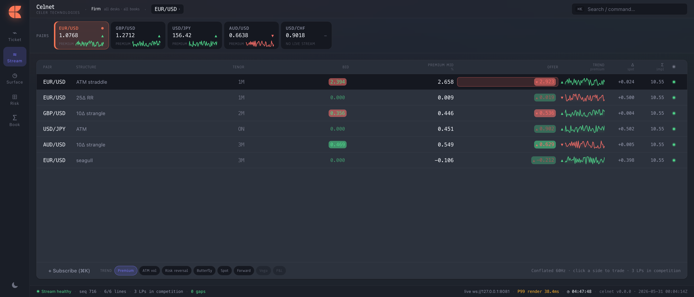
Surface (⌘3) — mark and recalibrate
MarkSurfaceRequest.smile_model; the family the server actually calibrated
under is read back from the typed arbitrage.model provenance and shown as
"marked as …".Risk (⌘4) — the scenario grid
‹ Book affordance returns to the desk-wide cube — Book
and Risk are two zooms of the same position-fact cube.Book (⌘5) — desk-wide aggregated risk
Light and dark themes, a high-contrast mode, the keyboard cheatsheet, the trend modes,
the scope breadcrumb, and the pair navigator are all conveniences layered over the
same API the Rust SDK, the CLI, and the Excel CELNET.* add-in
consume. A value priced in the Ticket — across the full catalogue from vanilla through
American/Bermudan and correlated baskets — streamed in the blotter, marked in the Surface
under any of the five smile families, shocked in Risk, or aggregated in the Book is the
engine's value, identical across every client. The GUI is the desk's richest window onto
Celnet, not a parallel implementation of it.
8. Celer Estate Integration, Deployment Modes & Engineering Rigor
How Celnet slots into a running Celer estate behind clean seam traits across three deployment modes — and (§8.6 onward) the wall of executable proofs that earns every claim in §1 through §7.
Celnet is the FX-options pricing system-of-record inside the Celer trade lifecycle. The broader Celer estate routes, risks, clears and books FX flow; Celnet owns the option mathematics — price plus the full desk Greek set, the marked surface across all five smile families (VV · SABR · SVI · SSVI · eSSVI), the full on-wire product catalogue, and server-side hierarchical option risk — and injects them into both the price path and the order path through a small set of clean seam traits. The competitive consequence is decisive: a desk gets a front-to-back FX-options capability that slots into a running Celer estate without standing up a parallel pricing stack and without a rewrite, behind one unversioned contract reachable identically from GUI, SDK, CLI, Excel and the WebSocket mirror.
The integration is built as traits and adapters, exercised against real loopback servers and sinks. The live binding to the running JVM estate is delivered through Celnet's implementation program: it slots in behind the already-built seams and is lit up against the running estate at deploy — an integration step on a finished interface, not new engineering.
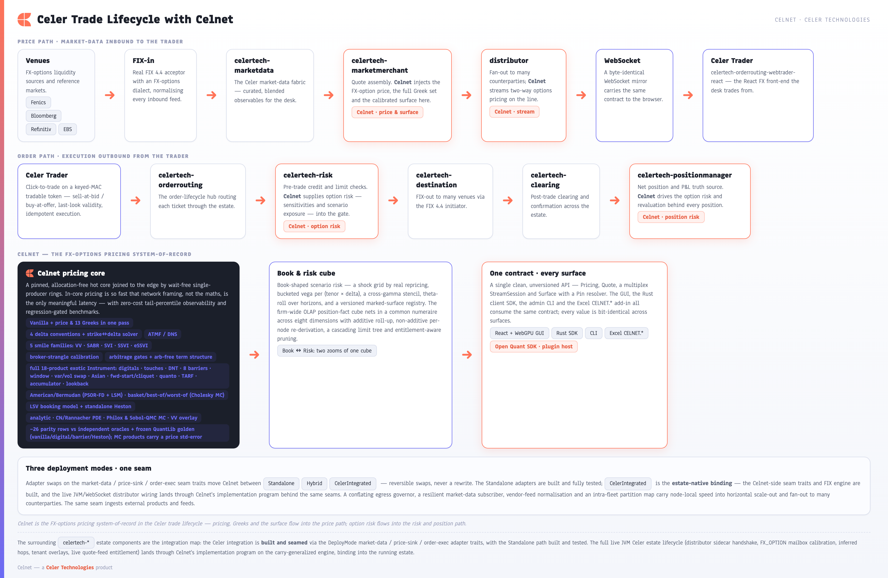
celertech-marketdata → marketmerchant → distributor → Celer Trader) and option risk into the risk and position path (celertech-orderrouting → celertech-risk → celertech-destination → celertech-positionmanager). The surrounding Celer services own routing, credit, execution, clearing and the net-position truth source; Celnet owns the option intelligence at each point it is needed.8.1 Where Celnet plugs in
The estate runs two complementary flows, and Celnet contributes to each at exactly the point where option intelligence is required.
Price path. Venue quotes arrive over FIX, are normalized by celertech-marketdata, assembled by celertech-marketmerchant, fanned out by the distributor over WebSocket, and rendered to the trader in Celer Trader — the celertech-orderrouting-webtrader-react FX front-end. Celnet enriches this path with FX-option price, the full desk Greek set (price + 13 Greeks), and the live calibrated surface, so every option line the trader sees carries Celnet's marks, surface-version pinned.
Order path. From Celer Trader an order flows through celertech-orderrouting (the order-lifecycle hub), celertech-risk (pre-trade credit and limit checks), celertech-destination (FIX-out to many venues), celertech-clearing, and into celertech-positionmanager, the net-position and P&L truth source. Celnet feeds option risk — sensitivities, FRTB-SA capital shape, and scenario surfaces — into the risk and position legs so credit checks and the position book reflect true option exposure rather than a notional approximation. Because aggregation is server-side and hierarchical (celnet-risk-cube, entitlement-pruned, numeraire-converted), the risk and position legs consume a firm roll-up rather than looping over Greek grids.
| Celer stage | Role | Celnet contribution |
|---|---|---|
| Market-data ingest & quote assembly | Normalize and merchant venue quotes | FX-option price, Greeks, calibrated surface into the quote |
| Distribution → Celer Trader | Stream prices to the React front-end | Option marks on every line, surface-version pinned |
| Order-routing hub | Order lifecycle | Option valuation and risk on the working order |
| Pre-trade risk | Credit & limit gate | Option risk sensitivities + FRTB-SA capital for accurate exposure |
| Position manager | Net position & P&L truth | Option Greeks and marked-surface valuation, server-aggregated |
8.2 The integration edge: FIX, governed egress, resilient ingest
Celnet meets the estate through a small, well-defined set of connectors, every one a real shipping component (crates/celnet-fix/, crates/celnet-integration/).
FIX 4.4 engine (celnet-fix). A complete, hand-rolled, zero-copy FIX 4.4 implementation with the FIXT/4.4 session FSM (logon / heartbeat / test-request / resend / gap-fill), both session roles — an acceptor (quote publisher with QuoteID-validity last-look) and an initiator (price-taker / hedge) — and an FX-options dialect (FXVO / FXNO; PutOrCall / Strike / ExerciseStyle / cut, convention-mapped through celnet-conventions). It carries quotes inbound and orders/executions outbound over the same protocol the rest of the estate and its venues already speak, and is gate-tested over a real loopback socket (crates/celnet-fix/src/{acceptor,initiator}.rs).
Conflating egress governor (celnet-integration/src/egress.rs). Outbound price distribution passes through an egress governor that conflates to the latest value, paces with a token bucket, and counts what it drops — so a fast core never overwhelms a slower consumer (the distributor mailbox or a native socket), and conflation is observable rather than silent. Under the edge this governor sits over a lock-free SPMC broadcast fan-out ring (celnet-fanout, wired at celnet-server/src/services/pricefanout.rs) that fans each pair's tick to all subscribers with zero-alloc publish and exact skip-accounting conflation.
Resilient market-data subscriber (celnet-integration/src/subscriber.rs). A resilient WebSocket subscriber consumes upstream prices with reconnect, resubscribe, and sequence-gap resynchronization built in (subscribe → snapshot → sequenced deltas → on-gap full resync), so a transient feed interruption heals automatically instead of stalling the desk or delivering out-of-order updates.
Vendor-feed normalization, blend & divergence (celnet-integration/src/{normalize,vendor,aggregate,divergence}.rs). A normalization layer maps heterogeneous upstream quotes into Celnet's canonical observables, blends multiple sources with staleness weighting, and surfaces divergence between them — gating out a stale or mispriced feed rather than silently averaging it. The blend / staleness / divergence algorithm is built and gated today; live multi-vendor quote feeds are delivered through Celnet's implementation program on the same normalization seam.
8.3 The order & execution lifecycle
The order path is fully realised at the integration edge. A streaming quote carries a single-use tradable token: an unguessable, keyed-MAC binding over the line (BUY@offer / SELL@bid) with a valid_until last-look window, minted on the StreamSession and redeemed by an idempotent Execute. The same keyed-MAC path drives click-to-trade in the GUI and the live FIX acceptor, so the order-acceptance discipline — accept only a fresh, key-bound, not-yet-consumed token; reject anything stale, forged or replayed — is one mechanism behind one contract, not a per-client reimplementation.
Why one token path matters. A forged token, a replayed token, and a stale token are all rejected identically whether the order arrives from Celer Trader's click-to-trade, the Rust SDK, or an inbound FIX order — because there is exactly one keyed-MAC mechanism, gate-tested against forged / replayed / expired inputs. The order path the estate sees is the order path the GUI sees.
valid_until last-look window. The same token discipline drives GUI click-to-trade, the SDK Execute call, and the inbound FIX acceptor — accept fresh and key-bound, reject stale, forged or replayed.8.4 Three deployment modes, one codebase
Integration depth is a configuration choice, not a fork. Three seam traits — the market-data source (MarketDataSource), the price sink (PriceSink / DistributorEgress), and the order/execution adapter — are swapped to move Celnet along a spectrum from fully self-contained to fully estate-native. The engine core never names a transport: it is handed an impl MarketDataSource and an impl PriceSink, and the EdgeBuilder picks the concrete adapters for the chosen DeploymentMode (celnet-integration/src/deployment.rs). Migration between modes is a reversible adapter swap, never a rewrite.

| Mode | Market-data source | Price & order seams | Use |
|---|---|---|---|
| Standalone | Self-contained (StandaloneSource) | Self-contained (StandaloneSink) | Celnet runs as an independent FX-options pricing and risk platform — fully real and testable in-crate; the default for a self-contained tenant |
| Hybrid | Estate and external vendor feeds (blended) | Governed egress | Estate market data blended with an external vendor feed, Celnet-owned pricing and distribution |
| CelerIntegrated | Celer distributor feed | Governed publish to the Celer distributor | Celnet as the estate's FX-options pricing system-of-record |
Proven today, delivered through the program. The Standalone mode is fully real and gate-tested in-crate — its StandaloneSource / StandaloneSink adapters record and replay every update. The CelerIntegrated and Hybrid modes are wired through the same MarketDataSource / PriceSink seam and exercised against a real loopback server and sink — proving the framing, the governed-egress conflation, and the resync contract. The estate-native binding itself — the JVM distributor sidecar handshake, mailbox calibration, and live quote-feed entitlement — is delivered through Celnet's implementation program: it slots in behind the already-built seam and is lit up against the running estate at deploy, an integration step on a finished interface. Because each mode is just a different binding of the same seam traits, a desk can start Standalone, prove the platform, and migrate deeper into the estate at its own pace.
8.5 Adaptable by design
The same market-data seam that ingests the Celer distributor ingests external products and feeds. Celnet's normalization layer is a vendor-neutral data-shape adapter built to adapt to the venues and terminals a desk already runs — for example Fenics, Bloomberg, Refinitiv and EBS, which are integration/adapter targets. Each is brought in as an adapter behind the seam that maps its quotes into the canonical observable set driving quote assembly, surface marking and live trend series. New sources are added as adapters behind the seam, so onboarding a feed is an integration, not a re-engineering of the pricing core.
The throughline across all of this is the platform's single principle: one clean contract, consumed identically everywhere. Whether Celnet runs Standalone or wired into the full Celer lifecycle, the price the order path sees, the risk the position manager books, and the number on the trader's screen are the same value from the same source. Excel is a first-class client of that same contract — every CELNET.* function reaches the identical server, so a structuring desk and a risk desk price from one source of truth.
CELNET.* task pane consumes the one unversioned contract — smile-model selection across all five families (VV / SABR / SVI / SSVI / eSSVI) — so a spreadsheet desk prices from the same server and the same marks as Celer Trader and the SDK.
CELNET.* functions spill premium, Monte-Carlo standard error, the full Greek set and a convention footer — the same values, conventions and std-error discipline the estate and the GUI receive, never a spreadsheet re-implementation of the maths.8 (cont.) · Engineering Rigor & Assurance
The wall of independent, executable proofs that runs on every change — the verification gate, per-class oracles, property/mutation/fuzz testing, the parity matrix, determinism, observability and supply-chain cleanliness — and the closing statement of the foundation of trust.
A pricing platform is only as trustworthy as the evidence behind its numbers. Celnet is engineered so that every headline claim — correctness, determinism, latency, resilience — is earned and continuously re-proven, not asserted. The differentiator is not a single clever gate; it is that the whole 34-crate workspace ships behind a wall of independent, executable proofs that run on every change, with each product class validated by the strongest oracle that class admits. Where an incumbent ships a number and a brochure, Celnet ships the number, the independent re-derivation that pins it, and the gate that fails the build if the two ever diverge.
8.6 The verification contract: just check
Every change passes one gate before it is "done": just check runs formatting, clippy -D warnings, the nextest suite, and cargo-deny. Numerical code is validated against references — never merely asserted plausible. The gate is the contract: a change that regresses a price, a property, a latency budget, a licence, or a parity claim fails the build before it reaches a desk.
8.7 Correctness, validated against the strongest oracle each class admits
Celnet does not make one blanket accuracy claim across the whole catalogue — different product classes admit different gold standards, and the platform applies the right one to each.
Analytic products — frozen golden tables. Vanilla prices and the full FX desk Greek set, both digital styles, all eight barrier variants, and one-touch values are validated to machine precision against frozen QuantLib 1.42.1 reference tables (crates/celnet-golden/data/{vanilla,digital,barrier,double_barrier,touch}_gk.csv) — independent maths, an independent implementation, agreeing to the last bits. The Heston (1993) stochastic-volatility European reference (heston_fo.csv) is gated identically against hand-pinned published-literature values, with provenance stated in the file header. Beyond the tables, every Greek is finite-difference cross-validated: each of price, spot- and forward-delta, gamma, vega, theta, both rhos, vanna, volga, charm, speed, zomma and color must match its numerical bump-and-revalue twin.
Closed-form structured products — exact limits and published constants. The structured catalogue (variance/volatility swaps, arithmetic and geometric Asians, forward-start/cliquet, quanto, lookback) is pinned by the exact analytic limit it must collapse to plus a code-disjoint independent re-derivation — a variance swap's log-contract replication against an independently coded adaptive-Simpson quadrature and the K_var == σ² flat-vol limit; a geometric Asian against Kemna-Vorst to ~1e-12. Regulatory capital is pinned the same way: the FRTB-SA low-correlation scenario transform is gated against hand-computed BCBS constants (ρ_low = max(2ρ−1, 0.75ρ), MAR21.6(2)), a defence added precisely because a longhand oracle that re-derives the same formula is a circular self-check — the BCBS-pinned constant breaks the circle.
Monte-Carlo and early-exercise products — explicit std-error bands. TARFs, accumulators, discrete-observation lookbacks, correlated baskets / best-of / worst-of (Cholesky MC), and American/Bermudan via Longstaff-Schwartz LSM carry a reported price standard error and are validated to converge within their own stated stderr of a code-disjoint independent MC. The first-generation exotics retain an internal triangulation gate on top: the analytic reflection method, the Crank-Nicolson PDE with a Rannacher start-up, and the Philox Monte-Carlo path engine must agree — three independent numerical routes converging on one price.
The smile and surface engine carries its own correctness gates across all five families (VV / SABR / SVI / SSVI / eSSVI) — butterfly density non-negativity (a pointwise Breeden-Litzenberger re-pricing), calendar total-variance monotonicity, and vertical no-arbitrage — enforced as the surface is calibrated, so a marked surface that violates no-arbitrage is rejected at the source.
| Product class | Strongest oracle applied | Bar |
|---|---|---|
| Vanilla, digital, barrier ×8, touch | Frozen QuantLib 1.42.1 golden tables | Machine precision (last bits) |
| Heston European | Hand-pinned published-literature golden table | Machine precision (last bits) |
| Every Greek (analytic) | Finite-difference bump-and-revalue twin | Analytic ≈ numerical |
| Var/vol swap, Asian, fwd-start/cliquet, quanto, lookback | Exact closed-form limit + code-disjoint quadrature / Kemna-Vorst | ~1e-6 … 1e-12 to the limit |
| FRTB-SA capital | Hand-computed BCBS constants (breaks circular oracle) | Exact to the standard |
| TARF, accumulator, discrete lookback, basket, American (LSM) | Code-disjoint independent Monte-Carlo | Within reported price std-error |
| First-gen exotics (additional) | Analytic ~ Crank-Nicolson-PDE ~ Philox-MC triangulation | Three routes converge |
| Surface (VV / SABR / SVI / SSVI / eSSVI) | Butterfly / calendar / vertical no-arbitrage gates | No arbitrage admitted |
8.8 Property, mutation and fuzz testing
Point checks confirm what an engineer thought to test; property-based testing confirms what they did not. Celnet asserts the invariants that must hold across whole input spaces — put-call parity, monotonicities, sign conventions, the branch behaviour of the strike↔delta solver across the premium-adjusted call-delta maximum — and the harness searches for counterexamples rather than waiting for one in production.
Mutation testing then audits the tests themselves: the suite deliberately perturbs the implementation and confirms the tests catch the change. The gate spans the numerically load-bearing estate — the pricing core (.config/mutants.toml), the exotics catalogue (mutants-exotics.toml), the surface engine (mutants-surface.toml), the risk cube (mutants-risk-cube.toml), and counterparty-valuation adjustments (mutants-xva.toml) — and fails the build on any non-equivalent survivor. The only exclusions are provably semantically-equivalent mutants, each justified inline and, for the solver cluster, verified against a 200k-case differential oracle that reproduces the unmutated result bit-for-bit.
Fuzz testing hardens the byte-level boundaries against adversarial input. Six libFuzzer targets feed arbitrary bytes into the hand-rolled parsers and untrusted entry points — vanilla_inputs, journal_recover, proto_convert, and the three replicated-log decoders replog_log_entry / replog_snapshot / replog_wire_message. Each target's contract is the same discipline: never panic (no slice overrun, no unwrap on an attacker-controlled length, no unbounded allocation), and return Ok(_) or a typed error — with re-encode soundness asserted on the Ok path.
8.9 An executable parity matrix
Capability claims are not prose in a brochure — they are codified as an executable parity matrix (docs/CLIENT-PARITY-MATRIX.md) backed by roughly twenty-six celnet-parity integration rows, each gating a "meets or beats" claim against an independent oracle: eSSVI density and calendar arbitrage, variance/vol swaps, analytic Asians, Heston (Carr-Madan ≈ Fang-Oosterlee COS), forward-start/cliquet, LSV, Sobol-QMC variance reduction, baskets, FRTB-SA, the conventions/pair universe, GPU pathwise and path Greeks, the Raft election/snapshot/compaction proofs, and XVA. Every coverage, convention, surface, risk and streaming claim is exercised against the running system on every change, so the comparison against the vendor-neutral archetypes is continuously proven rather than asserted. If a capability regresses, the matrix fails the gate; the claim and the code never drift apart.
8.10 Deterministic, cross-platform behaviour
Determinism is a first-class guarantee. Celnet's counter-based random number generator is bit-identical between CPU and GPU, and GPU results are reconciled against a high-precision CPU oracle, so the same scenario produces the same number on the accelerator or the CPU SIMD fallback. Plugin execution is equally deterministic: the WebAssembly sandbox supports bit-identical replay (f64::to_bits identity across runs), the foundation for reproducible risk and auditable pricing. The distributed substrate inherits the same guarantee: a follower or recovered node replays the leader-replicated log to bit-identical state, with the workload deliberately containing a 1-ULP value so the bits must match.
(The GPU proofs establish correctness and ratios against the f64 CPU oracle on the M4 dev host, whose Metal backend lacks f64; the absolute NVIDIA throughput headline is delivered through the CUDA backend on NVIDIA hardware — the f64-correct kernels are already in place, so the program lights up the absolute figure on the target accelerator.)
8.11 Zero-cost observability
The platform is fully instrumented without taxing the hot path. Latency is captured in tail-percentile HdrHistograms that are coordinated-omission aware, and telemetry is offloaded over a bounded, drop-on-full ring so the pinned hot core stays log-, lock- and allocation-free. Operators get the p50/p99/p99.9 picture they need for mission-critical running — surfaced on the stream as server_price_p50/p99/p999_nanos alongside conflation_drops, surface_version and correlation_id heartbeat fields — while the maths pays nothing for it. Performance itself is held by regression-gated benchmarks: the in-core truth-gate asserts p50≤2µs / p99≤10µs / p99.9≤25µs absolutely (measured ~42ns / 125ns / ~1µs on the M4 dev host — a 24–80× margin, host-local and single-core), and an iai-callgrind instruction-count gate runs in Linux CI.
8.12 Supply-chain cleanliness
Celnet is built exclusively on open-source, permissively-licensed software — no commercial libraries, solvers, or proprietary runtime data dependencies. The dependency set is policy-enforced in the gate (cargo-deny): licences are checked against an approved set, advisories are scanned, and banned or duplicate dependencies are rejected automatically. The result is a platform a bank can vet, deploy, and own end-to-end without commercial entanglement.
8.13 A resilient core: zero-allocation, hot-upgradable, durable, replicated
The runtime is engineered to keep trading through faults and upgrades. A zero-allocation hot core — wait-free single-producer/single-consumer rings feeding pinned cores, lock-free read-mostly state publication via an atomically swapped market-state snapshot and a single-writer seqlock top-of-book — does no allocation, locking or logging on the pricing path. Blue-green zero-downtime state handoff lets a new build take over from a running one without dropping the book, so hot upgrades are routine rather than an outage. Underneath, a durable, checksummed, append-only journal (with compaction/checkpoint built) provides clean crash recovery: a torn final record heals to the last good entry on restart, and the book and its repricing return bit-for-bit. Above the single node, a leader-replicated event log with full Raft (election + Pre-Vote, conflicting-tail truncation, snapshot compaction and InstallSnapshot reseed) commits only on quorum and replays to bit-identical state, proven on localhost multi-process.
How it all earns the claim. These mechanisms compose into a single discipline. Per-class oracle and finite-difference gates earn correctness; property, mutation and fuzz testing earn robustness; the parity matrix earns competitiveness; bit-identical RNG, plugin replay and Raft replay earn determinism; zero-cost observability and the absolute in-core truth-gate earn performance; the zero-allocation core, blue-green handoff, durable journal and replicated log earn resilience; supply-chain policy earns ownership. Built as a 34-crate one-way-acyclic Rust workspace with an extensive automated suite, Celnet is a platform whose every number a desk can trade on, a quant can reproduce, and an architect can deploy — because the proof runs every time the code does.
8.14 The implementation program on the carry-generalized engine
A precise statement of the methods, architecture and seams proven today and the production absolutes Celnet's implementation program lights up on them. Every item below is fully seamed and adapter-ready on the engine; the program delivers each against the live target as an integration step on a finished interface, never a rewrite:
- Cross-host wire p99 / SOTA kernel-bypass NIC datapath / absolute wire-latency SLOs — delivered on production topology; the in-core truth-gate plus loopback benches establish the measured compute foundation.
- CUDA/NVIDIA absolute GPU throughput, the ≤50ms exotic target, Workload-A/B absolutes — delivered through the CUDA backend on NVIDIA hardware; correctness and ratios are proven against the f64 CPU oracle today (M4 / Lavapipe), with the f64-correct kernels already in place.
- The live JVM Celer estate lifecycle (distributor sidecar handshake, mailbox calibration, live quote-feed entitlement) — lit up against the running estate at deploy; the seams and adapters (FIX 4.4 loopback,
DeploymentModeswap) are built today. - Raft §6 dynamic membership / cross-DC transport / network-partition hardening — delivered on production topology; correctness, quorum, election safety and framing are proven on localhost multi-process today.
- Plugin Tier-1 signed-shared-object and Tier-3 OS-sandbox — seamed behind the frozen contract and delivered through the program; Tier-0 native and Tier-2 wasmi ship today.
This is the foundation of trust: Celnet labels every figure precisely by its measurement context (in-core / M4 / loopback) and presents every forward increment as a delivery step on a finished, state-of-the-art seam — methods, architecture and coverage that already out-cover the single-dealer incumbents, with the production absolutes lit up on the same engine. The platform is production-ready by construction: its seams, adapters and proofs are in place so that bringing it up against a running Celer estate and accelerator fleet is integration, not new engineering.